Comprehensive analysis of single-cell immune repertoire data using immunarch and immundata
Overview
-
Topic: ...
-
Dataset: Single-cell single- and paired-chain TCR sequencing data
-
Size:: N receptors, M cells
-
Running time: the whole end-to-end pipeline runs in 30 sec
[WARNING] This tutorial is still in progress, so some things may not work as expected. Please open an issue at Github Issue if you encounter a bug.
Introduction
This vignette is a practical, end‑to‑end guide to analyzing single‑chain and paired‑chain Adaptive Immune Receptor Repertoire (AIRR) data derived from single‑cell assays (scRNA‑seq with VDJ, also often referred to as scVDJ‑seq / scTCR‑seq / scBCR‑seq). It starts from the basics and builds up to more advanced analyses, so it can serve both as a first stop for newcomers and as a focused introduction to specific topics for experienced readers.
What you'll learn
- Load single‑cell V(D)J data and sample metadata into
immunarch. - Define receptors (AA vs NT), set chain‑pairing rules, and perform essential QC.
- Define repertoires.
- Explore repertoire features: expansion, gene usage, CDR3 properties, and diversity.
- Quantify overlap/similarity between samples and conditions.
- Discover public receptors and their statistics.
- Link receptors to single‑cell transcriptomic clusters for downstream interpretation.
Dataset used in this tutorial
We will work with data for patient 6 from the study "Peripheral T cell expansion predicts tumour infiltration and clinical response" (Wu et al.; Nature 579:274--278, 2020). The dataset includes three compartments per patient: tumour, peripheral blood, and normal adjacent tissue (NAT). We will demonstrate a typical single‑cell AIRR workflow across these three samples. Here are the main findings of the study:
- Deep single‑cell RNA/TCR profiling across tumour, NAT, and blood
- Clonotypic expansion of effector‑like T cells in and around tumours
- Patients with stronger peripheral expansion signatures tend to respond better to anti‑PD‑(L)1 therapy
- Expanded intratumoural clonotypes are often detectable in blood, enabling convenient monitoring
References & data access:
- Wu TD, Madireddi S, de Almeida PE, et al. Nature (2020). "Peripheral T cell expansion predicts tumour infiltration and clinical response."
- GEO series: GSE139555 (single‑cell RNA/TCR; pretreatment samples from 14 patients; tumour/NAT/blood).
Helpful links
- Links for the source code and issue tracker:
immunomind/immunarch·immunomind/immundata - Link for the coding agent skills:
immunomind/skills
Setup
Pre-requisites
- R ≥ 4.2 (4.3+ recommended)
- ~2-4 GB RAM free for the small demonstration subset used here
You can install the required packages with pak (recommended for reproducibility and fast binary installs) or with base installers.
Using pak (recommended)
install.packages("pak", repos = sprintf("https://r-lib.github.io/p/pak/stable/%s/%s/%s", .Platform$pkgType, R.Version()$os, R.Version()$arch))
# We use development versions of the packages here because CRAN releases take time.
pak::pak("immunomind/immundata@dev")
pak::pak("immunomind/immunarch@dev")
pak::pak("Seurat")
pak::pak("BiocFileCache")
pak::pak("ggthemes")
pak::pak("ggsci")
Using CRAN
Tip: If you prefer fully reproducible environments, consider using
renv::init()to snapshot package versions.
install.packages(c("immunarch", "Seurat", "BiocFileCache", "ggthemes", "ggsci"))
Load packages and set up the environment
# Silence noisy startup messages while loading
suppressPackageStartupMessages({
library(immunarch)
library(Seurat)
library(BiocFileCache)
library(ggplot2)
library(ggthemes)
library(ggsci)
})
theme_set(ggthemes::theme_few())
sessionInfo()
R version 4.6.2 (2026-10-29)
Platform: x86_64-pc-linux-gnu
Running under: Ubuntu 26.04.1 LTS
Matrix products: default
BLAS: /usr/lib/x86_64-linux-gnu/openblas-pthread/libblas.so.3
LAPACK: /usr/lib/x86_64-linux-gnu/openblas-pthread/libopenblasp-r0.3.32.so; LAPACK version 3.12.0
locale:
[1] LC_CTYPE=C.UTF-8 LC_NUMERIC=C LC_TIME=C.UTF-8
[4] LC_COLLATE=C.UTF-8 LC_MONETARY=C.UTF-8 LC_MESSAGES=C.UTF-8
[7] LC_PAPER=C.UTF-8 LC_NAME=C LC_ADDRESS=C
[10] LC_TELEPHONE=C LC_MEASUREMENT=C.UTF-8 LC_IDENTIFICATION=C
time zone: UTC
tzcode source: system (glibc)
attached base packages:
[1] stats graphics grDevices utils datasets methods base
other attached packages:
[1] ggsci_5.2.0 ggthemes_7.0.0 BiocFileCache_3.2.0
[4] dbplyr_2.6.0 Seurat_6.0.0 SeuratObject_5.4.0
[7] sp_2.2-4 immunarch_0.10.3.9008 patchwork_1.3.2
[10] immundata_0.1.0.9003 duckplyr_1.2.2 dplyr_1.2.1
[13] ggplot2_4.0.4
loaded via a namespace (and not attached):
[1] DBI_1.3.0 pbapply_1.7-5 httr2_1.3.0
[4] gridExtra_2.3.1 rlang_1.3.0 magrittr_2.0.5
[7] RcppAnnoy_0.0.23 otel_0.3.0 matrixStats_1.5.0
[10] ggridges_0.5.7 compiler_4.6.2 RSQLite_3.53.3
[13] png_0.1-9 vctrs_0.7.3 reshape2_1.4.5
[16] stringr_1.6.0 pkgconfig_2.0.3 fastmap_1.2.0
[19] backports_1.5.1 rmarkdown_2.32 tzdb_0.5.0
[22] bit_4.6.0 purrr_1.2.2 xfun_0.62
[25] cachem_1.1.0 jsonlite_2.0.0 blob_1.3.0
[28] irlba_2.4.1 parallel_4.6.2 cluster_2.1.8.3
[31] R6_2.6.1 ica_1.0-3 stringi_1.8.9
[34] RColorBrewer_1.1-3 parallelly_1.50.0 scattermore_1.2
[37] Rcpp_1.1.2 knitr_1.52 future.apply_1.21.0
[40] readr_2.2.0 sctransform_0.4.3 Matrix_1.7-6
[43] igraph_2.3.4 tidyselect_1.2.1 yaml_2.3.12
[46] codetools_0.2-20 curl_8.1.0 listenv_1.1.0
[49] lattice_0.23-1 tibble_3.3.1 plyr_1.8.9
[52] withr_3.0.3 S7_1.0.0 evaluate_1.0.5
[55] Rtsne_0.17 future_1.82.0 fastDummies_1.7.6
[58] filelock_1.0.3 pillar_1.11.1 KernSmooth_2.23-27
[61] checkmate_2.3.4 generics_0.1.4 RcppHNSW_0.7.0
[64] dtplyr_1.3.3 hms_1.1.4 scales_1.4.0
[67] globals_0.20.0 glue_1.8.1 tools_4.6.2
[70] data.table_1.18.6.1 RSpectra_0.16-2 RANN_2.6.3
[73] dotCall64_1.2 cowplot_1.2.0 grid_4.6.2
[76] collections_0.3.12 tidyr_1.3.2 duckdb_2.0.0
[79] cli_3.6.6 spam_2.11-4 uwot_0.2.5
[82] gtable_0.3.6 pls_2.9-0 digest_0.6.39
[85] progressr_1.1.0 ggrepel_0.9.8 farver_2.1.2
[88] memoise_2.0.1 htmltools_0.5.9 lifecycle_1.0.5
[91] httr_1.4.9 bit64_4.8.6 MASS_7.3-66
Typical workflow: from files to analysis
Analysing single-cell AIRR data with immunarch and immundata follows
a reproducible workflow that separates data ingestion from downstream
transformation and annotation. Sounds scary, but in reality it is a
rather straightforward approach: load and preprocess the data first, and
analyse it second - instead of having steps mixed in an arbitrary order.
This separation lets you reanalyse large datasets without repeatedly
reading and preprocessing the original receptor files.
The workflow is divided into two phases.
-
Ingestion phase
- Read the manifest file with immune repertoire metadata (optional but recommended)
- Define receptors using a schema (e.g., single or paired chains, custom features)
- Optionally define a repertoire schema (to compare repertoire-level statistics such as diversity)
- Load AIRR-seq files from disk
- Process the input files and store the dataset as an immutable,
on-disk
ImmunDataobject.
-
Transformation phase
- Annotate
ImmunDatawith external information (e.g., scRNA-seq clusters, immunogenicity information) - Regroup repertoires on the fly (e.g., by tissue, donor, or cell state) to better reflect the biomarkers you are looking for
- Filter, mutate, and compute statistics
- Visualize results, save plots, or export annotations back to Seurat/AnnData
- Annotate
You can read more about the phases in Concepts → Ingestion Phase.
Note: materialization
Tip: Use materialization for final summaries, plots, or tables, but keep your core ImmunData object on disk and in its lazy, efficient format for most analyses.
The ImmunData object from immundata is designed to handle large,
out-of-memory datasets efficiently. Instead of loading everything into
RAM, it stores computations and only runs them when the results are
actually needed, e.g., for plotting or summarizing data. This is called
lazy evaluation.
Materialization means executing all pending computations and bringing the results into memory as a concrete table or data frame. This approach is powerful for working with large datasets, but can be unfamiliar if you're used to working entirely in-memory.
If you see an error like:
Error: Materialization is disabled, use collect() or as_tibble() to materialize.
...it means your data hasn't been materialized yet (i.e., the computation hasn't run and the results aren't present in R memory).
- For small results (e.g., summary stats, small tables), simply call
collect()oras_tibble()at the end of your pipeline to materialize the data:
result <- some_immunarch_function(idata) |> collect()
- For large datasets (e.g., a fully filtered
ImmunDataobject), avoid materializing unless you're sure you need all data in memory --- this could use significant RAM and slow down your workflow.
You can read more about materialization in Concepts → Immutability.
Working with data
Load AIRR data
First, we need to load sample metadata from the manifest file. The
manifest file is a tab-separated table, where each row represents a
sample (or file), and columns contain sample-level features such as
"Tissue", "Donor", or "ImmunotherapyResponse".
manifest_file <- system.file("extdata/single_cell", "manifest.csv", package = "immundata")
manifest_file
[1] "/home/runner/work/_temp/Library/immundata/extdata/single_cell/manifest.csv"
manifest <- read_manifest(manifest_file)
Rows: 3 Columns: 3
── Column specification ────────────────────────────────────────────────────────
Delimiter: ","
chr (3): file, Tissue, Prefix
ℹ Use `spec()` to retrieve the full column specification for this data.
ℹ Specify the column types or set `show_col_types = FALSE` to quiet this message.
ℹ Found 3/3 repertoire files from the manifest on disk
✔ Manifest parsed successfully
manifest
# A tibble: 3 × 4
file Tissue Prefix imd_filename
<chr> <chr> <chr> <chr>
1 /home/runner/work/_temp/Library/immundata/extdata/… Blood LB6_ /home/runne…
2 /home/runner/work/_temp/Library/immundata/extdata/… Normal LN6_ /home/runne…
3 /home/runner/work/_temp/Library/immundata/extdata/… Tumor LT6_ /home/runne…
The "Tissue" column defines which biological compartment (tumour,
blood, or NAT) each sample comes from. We'll use it to split data into
repertoires. Later in this tutorial, you'll see how to dynamically split
data by other annotations, such as cell clusters from scRNA-seq.
Next, get the file paths to the V(D)J data packaged with immundata:
inp_files <- paste0(system.file("extdata/single_cell", "", package = "immundata"), "/*.csv.gz")
inp_files
[1] "/home/runner/work/_temp/Library/immundata/extdata/single_cell//*.csv.gz"
What is a "receptor" from a data analysis perspective? A receptor is the central unit of analysis and is defined by:
- The features used for grouping (e.g.,
cdr3,v_call,j_call) - The chains involved (e.g.,
TRBfor TCR beta, or pairedTRA+TRB)
Defining a receptor schema lets you flexibly group TCR/BCR sequences for downstream analysis and compute statistics on them.
Here's how to define a basic single-chain receptor schema: TRB chains,
grouped by both cdr3 and v_call (amino acid sequence and V gene).
schema <- make_receptor_schema(features = c("cdr3", "v_call"), chains = c("TRB"))
schema
$features
[1] "cdr3" "v_call"
$chains
[1] "TRB"
If you want to use other receptor definitions, you can create and pass
custom schemas to read_repertoires(). Below are a few examples:
# Paired-chain
schema <- make_receptor_schema(features = c("cdr3", "v_call"), chains = c("TRA", "TRB"))
schema
$features
[1] "cdr3" "v_call"
$chains
[1] "TRA" "TRB"
# Single-chain with "cdr3" only
schema <- make_receptor_schema(features = c("cdr3"), chains = c("TRA"))
schema
$features
[1] "cdr3"
$chains
[1] "TRA"
# The strictest receptor definition
schema <- make_receptor_schema(features = c("cdr3", "v_call", "j_call"), chains = c("TRA", "TRB"))
schema
$features
[1] "cdr3" "v_call" "j_call"
$chains
[1] "TRA" "TRB"
The main entry point for loading AIRR-seq data into the immunarch
framework is the read_repertoires() function from immundata. This
function handles everything from reading raw files, to preprocessing and
aggregation, to joining sample metadata and saving an efficient on-disk
ImmunData object for reproducible analysis.
The key parameters you'll want to understand:
path: vector of input file paths, e.g., to AIRR TSV, 10X CSV, or Parquet files. (You can useSys.glob()to collect files.)schema: defines how receptors are grouped; typically created withmake_receptor_schema().manifest: optional data frame with sample-level metadata, read byread_manifest().barcode_col: name of the column containing cell barcodes (e.g.,"barcode"for 10x single-cell data); this triggers single-cell logic.locus_col: name of the column specifying the chain (e.g.,"locus"for TRA/TRB distinction).umi_col: column for UMI counts (e.g.,"umis"); used to select dominant chains per barcode.preprocess: list of preprocessing steps to apply before aggregation. The presetmake_default_preprocessing("10x")works for standard 10x data.repertoire_schema: columns in metadata (or annotation) used to define repertoires (e.g.,"Tissue"to split by compartment).
Here's how to use it on the packaged single-cell demo dataset:
schema <- make_receptor_schema(features = c("cdr3", "v_call"), chains = c("TRB"))
idata <- read_repertoires(path = inp_files,
schema = schema,
manifest = manifest,
barcode_col = "barcode",
locus_col = "locus", # Mind that we use `locus` here because of the default column renaming "chain" -> "locus" for 10xGenomics files
umi_col = "umis",
preprocess = make_default_preprocessing("10x"),
repertoire_schema = "Tissue")
##
## ── Reading repertoire data
## 1. /home/runner/work/_temp/Library/immundata/extdata/single_cell/lb6.csv.gz
## 2. /home/runner/work/_temp/Library/immundata/extdata/single_cell/ln6.csv.gz
## 3. /home/runner/work/_temp/Library/immundata/extdata/single_cell/lt6.csv.gz
## ℹ Checking if all files are of the same type
## ✔ All files have the same extension
##
## ── Prematerializing repertoire data
## ℹ Combining text input into temporary Parquet at [/tmp/RtmpyRygPE/immundata-prematerialized-a144377b72e6.parquet]
## ✔ Prematerialization is finished
##
## ── Renaming the columns and schemas
## ✔ Introduced new renamed columns: locus, v_call, d_call, and j_call
## ✔ Renaming is finished
##
## ── Preprocessing the data
## 1. exclude_columns
## 2. filter_nonproductive
## ✔ Preprocessing plan is ready
##
## ── Aggregating the data to receptors
## ℹ Found target locus: TRB. The dataset will be pre-filtered to leave chains for this locus only
## ℹ Processing data as single-cell sequencing immune repertoires - no counts, with barcodes, chain pairing is possible
## ✔ Execution plan for receptor data aggregation and annotation is ready
##
## ── Joining the manifest with the dataset using 'imd_filename' column
## ✔ Joining plan is ready
##
## ── Postprocessing the data
## 1. prefix_barcodes
## ✔ Postprocessing plan is ready
##
## ── Aggregating repertoires...
## ✔ Aggregation is finished
##
## ── Saving the newly created ImmunData to disk
## ℹ Writing the receptor annotation data to [/home/runner/work/_temp/Library/immundata/extdata/single_cell/immundata-lb6.csv/annotations.parquet]
## ℹ Writing the metadata to [/home/runner/work/_temp/Library/immundata/extdata/single_cell/immundata-lb6.csv/metadata.json]
## ✔ ImmunData files saved to [/home/runner/work/_temp/Library/immundata/extdata/single_cell/immundata-lb6.csv]
##
## ── Summary
## ℹ Time elapsed: 2.2 secs
## ✔ Loaded ImmunData with the receptor schema: [c("cdr3", "v_call") and TRB]
## ✔ Loaded ImmunData with the repertoire schema: [Tissue]
## ✔ Loaded ImmunData with [16551] chains and [9284] receptors
idata
##
## ── ImmunData ───────────────────────────────────────────────────────────────────
##
## ── Receptors: ──
##
## # A duckplyr data frame: 3 variables
## imd_receptor_id cdr3 v_call
## <int> <chr> <chr>
## 1 6961 CASSVHPQYF TRBV2
## 2 1 CAWSGQGWGGSTDTQYF TRBV30
## 3 4552 CASSPRPGSTGELFF TRBV18
## 4 2201 CASSQGLGVSYEQYF TRBV4-1
## 5 4553 CASSHGQGRTGELFF TRBV7-2
## 6 2202 CASGLRRGRDSGANVLTF TRBV19
## 7 4554 CSAHRGLGNQPQHF TRBV20-1
## 8 6962 CASSPQGVSNQPQHF TRBV7-2
## 9 4555 CASSSVSGNSPLHF TRBV7-9
## 10 2 CASPLGALTDTQYF TRBV2
## # ℹ more rows
## ── Annotations: ──
## # A duckplyr data frame: 23 variables
## barcode locus v_call d_call j_call c_gene productive cdr3 cdr3_nt reads
## <chr> <chr> <chr> <chr> <chr> <chr> <chr> <chr> <chr> <dbl>
## 1 AAACCTGAGCG… TRB TRBV2 None TRBJ2… TRBC2 True CASS… TGTGCC… 13736
## 2 AAACCTGCAAG… TRB TRBV30 TRBD1 TRBJ2… TRBC2 True CAWS… TGTGCC… 4062
## 3 AAACCTGCACA… TRB TRBV18 TRBD2 TRBJ2… TRBC2 True CASS… TGTGCC… 8617
## 4 AAACCTGGTAC… TRB TRBV4… TRBD1 TRBJ2… TRBC2 True CASS… TGCGCC… 6811
## 5 AAACCTGGTTA… TRB TRBV7… TRBD1 TRBJ2… TRBC2 True CASS… TGTGCC… 16836
## 6 AAACCTGTCCA… TRB TRBV19 TRBD2 TRBJ2… TRBC2 True CASG… TGTGCC… 8805
## 7 AAACCTGTCTT… TRB TRBV2… TRBD1 TRBJ1… TRBC1 True CSAH… TGCAGT… 8311
## 8 AAACGGGAGAT… TRB TRBV7… TRBD1 TRBJ1… TRBC1 True CASS… TGTGCC… 3390
## 9 AAACGGGAGCG… TRB TRBV7… TRBD2 TRBJ1… TRBC1 True CASS… TGTGCC… 4956
## 10 AAACGGGAGGA… TRB TRBV2 TRBD1 TRBJ2… TRBC2 True CASP… TGTGCC… 5625
## # ℹ more rows
## # ℹ 13 more variables: umis <dbl>, imd_filename <chr>, imd_barcode <chr>,
## # imd_chain_id <int>, imd_receptor_id <int>, imd_n_chains <dbl>, file <chr>,
## # Tissue <chr>, Prefix <chr>, imd_count <dbl>, imd_repertoire_id <int>,
## # imd_proportion <dbl>, n_repertoires <int>
## ── Receptor schema: ──
## features:
## → cdr3
## → v_call
## chains:
## → TRB
##
## ── Repertoire schema: ──
##
## → Tissue
##
## ── List of repertoires: ──
##
## # A tibble: 3 × 4
## imd_repertoire_id Tissue n_barcodes n_receptors
## <int> <chr> <int> <int>
## 1 1 Blood 3820 3721
## 2 2 Normal 5956 2672
## 3 3 Tumor 6775 3495
The result, idata, is an ImmunData object: a columnar, on-disk
structure optimised for immune repertoire analysis. You can query,
annotate and regroup it while working efficiently with data that may not
fit in memory.
Load scRNAseq data
If you're working with single-cell transcriptomics, you'll usually want to bring in cluster annotations or cell type labels. This can be done with a simple TSV table, or directly from a Seurat/AnnData object. Let's load the bundled cell annotations and use them to annotate our immune receptors:
cells_file <- system.file("extdata/single_cell", "cells.tsv.gz", package = "immundata")
cells_file
[1] "/home/runner/work/_temp/Library/immundata/extdata/single_cell/cells.tsv.gz"
cells <- readr::read_tsv(cells_file)
Rows: 15174 Columns: 6
── Column specification ────────────────────────────────────────────────────────
Delimiter: "\t"
chr (4): barcode, ident, sample, source
dbl (2): UMAP_1, UMAP_2
ℹ Use `spec()` to retrieve the full column specification for this data.
ℹ Specify the column types or set `show_col_types = FALSE` to quiet this message.
head(cells)
# A tibble: 6 × 6
barcode ident sample source UMAP_1 UMAP_2
<chr> <chr> <chr> <chr> <dbl> <dbl>
1 LT6_AAACCTGAGCGTTCCG-1 8.4-Chrom LT6 Tumor 0.870 0.0175
2 LT6_AAACCTGCATCGTCGG-1 4.4-FOS LT6 Tumor -3.75 -0.445
3 LT6_AAACCTGGTACGAAAT-1 4.6a-Treg LT6 Tumor -2.28 -4.70
4 LT6_AAACCTGGTAGAGTGC-1 4.1-Trm LT6 Tumor -3.31 -1.28
5 LT6_AAACCTGGTTACGTCA-1 4.3-TCF7 LT6 Tumor -6.93 -0.653
6 LT6_AAACCTGTCCGTTGCT-1 4.6b-Treg LT6 Tumor -0.644 -5.03
To visualize gene expression and link it with immune repertoires, load the expression matrix into a Seurat object. Here, we use a cached RDS to speed up the tutorial:
url <- "https://zenodo.org/records/15604205/files/l6data.rds?download=1"
dest <- BiocFileCache::bfcrpath(BiocFileCache::BiocFileCache(ask = FALSE), url)
mat <- readr::read_rds(dest)
sdata <- CreateSeuratObject(counts = mat)
embeddings <- as.matrix(cells[c("UMAP_1", "UMAP_2")])
rownames(embeddings) <- cells$barcode
umap_dr <- CreateDimReducObject(embeddings = embeddings, key = "UMAP_", assay = DefaultAssay(sdata))
sdata[["umap"]] <- umap_dr
Idents(sdata) <- setNames(cells$ident, cells$barcode)
DimPlot(sdata, reduction = "umap", order = sort(unique(cells$ident), decreasing = TRUE), label = TRUE, alpha = .5)
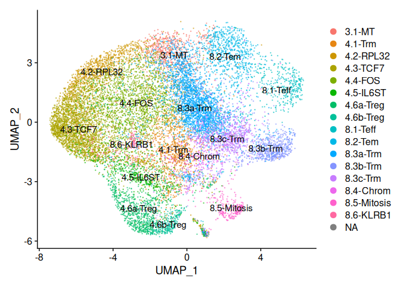
Tip: The
cellsobject here includes precomputed UMAP coordinates to save time. In a real-world workflow, you would extract cluster labels and embeddings from your processed Seurat/AnnData object and merge them with your immune receptor data for downstream analysis.
How to read other types of data --- bulk, single-chain, etc.
The read_repertoires() function is flexible and supports many
repertoire data types and formats. Here are practical patterns for
different scenarios. Use these examples as templates to adapt to your
own data sources and formats.
Note: These code blocks are for demonstration and not intended to run as part of this tutorial. The "Tissue" column must be present in your data if you want to define repertoires by tissue.
1. Bulk sequencing
For bulk AIRR-seq data, you generally don't need barcode_col,
locus_col, or umi_col. Optionally provide count_col if your data
includes receptor counts.
idata <- read_repertoires(path = inp_files,
schema = schema,
manifest = manifest,
count_col = "counts",
preprocess = make_default_preprocessing("airr"),
repertoire_schema = "Tissue")
2. Single-cell sequencing
For single-cell data, you'll typically need all columns (barcode, locus, UMI) for proper chain aggregation and cell assignment.
idata <- read_repertoires(path = inp_files,
schema = schema,
manifest = manifest,
barcode_col = "barcode",
locus_col = "chain",
umi_col = "umis",
preprocess = make_default_preprocessing("10x"),
repertoire_schema = "Tissue")
3. AIRR-C or 10x Genomics format
Both AIRR-C and 10x Genomics formats are supported. Pay attention to the
receptor schema, locus column (locus or chain), and use the correct
preset for make_default_preprocessing().
#
# AIRR-C
#
schema <- make_receptor_schema(features = c("junction_aa", "v_call"), chains = "TCRB")
# or
schema <- make_receptor_schema(features = c("cdr3_aa", "v_call"), chains = "TCRB")
# reminder how to read paired-chain data if needed:
schema <- make_receptor_schema(features = c("cdr3_aa", "v_call"), chains = c("TCRA", "TCRB"))
idata <- read_repertoires(path = inp_files,
schema = schema,
manifest = manifest,
barcode_col = "cell_id",
locus_col = "locus",
umi_col = "umi_count",
preprocess = make_default_preprocessing("airr"),
repertoire_schema = "Tissue")
#
# 10XGenomics
#
# This is how the original schema would look like
schema <- make_receptor_schema(features = c("cdr3_aa", "v_gene"), chains = "TRB")
idata <- read_repertoires(path = inp_files,
schema = schema,
manifest = manifest,
barcode_col = "barcode",
locus_col = "chain",
umi_col = "umis",
preprocess = make_default_preprocessing("10x"),
rename_columns = NULL,
repertoire_schema = "Tissue")
# Immundata renames some columns by default to match them with AIRR-C format.
# So we use this:
schema <- make_receptor_schema(features = c("cdr3", "v_call"), chains = "TRB")
idata <- read_repertoires(path = inp_files,
schema = schema,
manifest = manifest,
barcode_col = "barcode",
locus_col = "locus",
umi_col = "umis",
preprocess = make_default_preprocessing("10x"),
repertoire_schema = "Tissue")
4. Reading file paths from manifest
If your manifest contains file paths, you can use the special
path = "<manifest>" argument. Specify which column in your manifest
has the file paths with manifest_file_col.
idata <- read_repertoires(path = "<manifest>",
schema = schema,
manifest = manifest,
barcode_col = "barcode",
locus_col = "locus",
umi_col = "umis",
preprocess = make_default_preprocessing("10x"),
repertoire_schema = "Tissue")
Analyse immune repertoire-level statistics
Key immune repertoire statistics
A well-designed immune repertoire analysis always starts with a set of basic descriptive statistics. These help you:
- Check data quality (e.g., are all samples/cell types well-represented?)
- Spot technical artifacts (e.g., biased V gene usage, length skews)
- Summarize diversity and composition for downstream biological or clinical questions
The immunarch package provides a family of functions, airr_desc_*,
to quickly compute these statistics from your ImmunData object. To see
all options or details, run ?airr_desc in your R console.
Currently there are three functions to compute key statistics:
-
airr_desc_chains()counts the number of chains (e.g., TRA, TRB, IGH units) and unique receptors per repertoire/sample. Use this for library size, capture depth, and to check chain balance (e.g., are you missing TRA?). -
airr_desc_lengths()summarizes the CDR3 length distribution per repertoire. Reveals if your data has technical biases, primer effects, or biologically meaningful skews (like more long or short clones in a disease). -
airr_desc_genes()counts the usage of V, D, or J genes per repertoire/sample/cluster. Essential for characterizing repertoire composition, comparing patient groups, or making features for ML models.
1a. Number of receptors and barcodes for samples
Let's start by quantifying two basic properties:
-
Number of unique barcodes per sample (reflects cell yield)
-
Number of unique receptors per sample (reflects immune diversity)
These metrics are often used as a first-line QC and as a way to detect outliers or sample-specific technical effects. Large differences in barcode count may indicate sample quality or biological differences (e.g., tumour-infiltrating T cell abundance, malignant cells). Receptor count per sample gives a sense of diversity captured and can flag technical dropouts or high expansion. Fewer unique receptors relative to the number of cells can indicate greater clonal expansion. It is useful to investigate the biological and technical factors behind this pattern.
idata_stats <- airr_desc_chains(idata)
idata_stats
# A tibble: 3 × 6
imd_repertoire_id n_barcodes n_receptors locus n_chains Tissue
* <int> <int> <int> <chr> <int> <chr>
1 3 6775 3495 TRB 6775 Tumor
2 1 3820 3721 TRB 3820 Blood
3 2 5956 2672 TRB 5956 Normal
idata_stats |> vis()
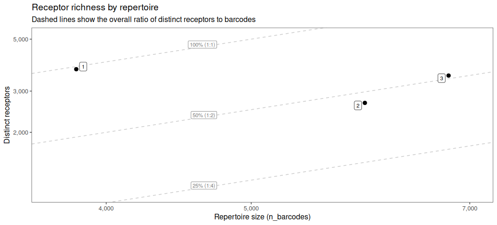
The plot shows the number of unique receptors against the number of barcodes. The dashed lines indicate the ratio between them. Repertoires on the 100% line have one unique receptor per barcode. Those on the 50% line have, on average, two barcodes per unique receptor.
This plot shows one aggregated repertoire per tissue. To examine statistics for individual cell clusters, we first need to redefine the repertoires.
1b. Number of receptors and barcodes for cell clusters
The basic sample-level view is barely useful, and often you want to see
how immune repertoires are distributed within cell subpopulations, e.g.,
by T cell cluster. With single-cell data, this is straightforward thanks
to the flexible annotation model in immundata.
Currently, the idata object holds three repertoires, one for each
tissue. Let's check that:
idata$repertoires
# A tibble: 3 × 4
imd_repertoire_id Tissue n_barcodes n_receptors
<int> <chr> <int> <int>
1 1 Blood 3820 3721
2 2 Normal 5956 2672
3 3 Tumor 6775 3495
To break down repertoire statistics by cluster, we'll annotate immune
receptors with cluster labels from the single-cell data (sdata). Both
idata and cells (and the Seurat object) share cell barcodes, so we
can safely map clusters onto the immune data:
# Build a tibble: cluster label per barcode (cell)
annot <- tibble(Cluster = as.character(Idents(sdata)), barcode = names(Idents(sdata)))
annot
# A tibble: 15,174 × 2
Cluster barcode
<chr> <chr>
1 8.4-Chrom LT6_AAACCTGAGCGTTCCG-1
2 4.4-FOS LT6_AAACCTGCATCGTCGG-1
3 4.6a-Treg LT6_AAACCTGGTACGAAAT-1
4 4.1-Trm LT6_AAACCTGGTAGAGTGC-1
5 4.3-TCF7 LT6_AAACCTGGTTACGTCA-1
6 4.6b-Treg LT6_AAACCTGTCCGTTGCT-1
7 8.2-Tem LT6_AAACCTGTCGCCTGTT-1
8 4.1-Trm LT6_AAACCTGTCTCCGGTT-1
9 4.6a-Treg LT6_AAACGGGAGGTAGCTG-1
10 8.3a-Trm LT6_AAACGGGAGTTATCGC-1
# ℹ 15,164 more rows
# Annotate ImmunData by barcode
idata <- annotate_barcodes(idata, annot, "barcode")
# Magic: we redefine what a repertoire is on-the-fly
idata <- agg_repertoires(idata, c("Tissue", "Cluster"))
# Now each repertoire is a unique (Tissue, Cluster) pair
idata$repertoires
# A tibble: 51 × 5
imd_repertoire_id Tissue Cluster n_barcodes n_receptors
<int> <chr> <chr> <dbl> <int>
1 1 Blood 3.1-MT 160 157
2 2 Blood 4.1-Trm 248 247
3 3 Blood 4.2-RPL32 501 499
4 4 Blood 4.3-TCF7 1000 995
5 5 Blood 4.4-FOS 588 584
6 6 Blood 4.5-IL6ST 167 167
7 7 Blood 4.6a-Treg 192 187
8 8 Blood 4.6b-Treg 22 22
9 9 Blood 8.1-Teff 57 50
10 10 Blood 8.2-Tem 125 115
# ℹ 41 more rows
Now is a good time to save a snapshot. You've run several heavy steps and defined your working dataset: tissue annotations, cluster labels, and more. A snapshot freezes this state for reproducibility. Learn why in the Concepts → Immutability.
Use write_immundata() to save a snapshot to disk. You can then load it
to continue working with the saved dataset.
idata <- write_immundata(idata, "./immundata-files")
## ℹ Writing the receptor annotation data to [./immundata-files/annotations.parquet]
## ℹ Writing the metadata to [./immundata-files/metadata.json]
## ✔ ImmunData files saved to [./immundata-files]
Now let's recompute and visualize statistics at this new level of granularity:
idata_stats <- airr_desc_chains(idata)
idata_stats
# A tibble: 51 × 7
imd_repertoire_id n_barcodes n_receptors locus n_chains Tissue Cluster
* <int> <int> <int> <chr> <int> <chr> <chr>
1 1 160 157 TRB 160 Blood 3.1-MT
2 2 248 247 TRB 248 Blood 4.1-Trm
3 3 501 499 TRB 501 Blood 4.2-RPL32
4 4 1000 995 TRB 1000 Blood 4.3-TCF7
5 5 588 584 TRB 588 Blood 4.4-FOS
6 6 167 167 TRB 167 Blood 4.5-IL6ST
7 7 192 187 TRB 192 Blood 4.6a-Treg
8 8 22 22 TRB 22 Blood 4.6b-Treg
9 9 57 50 TRB 57 Blood 8.1-Teff
10 10 125 115 TRB 125 Blood 8.2-Tem
# ℹ 41 more rows
idata_stats |> vis(label = "Cluster", fill = "Tissue")
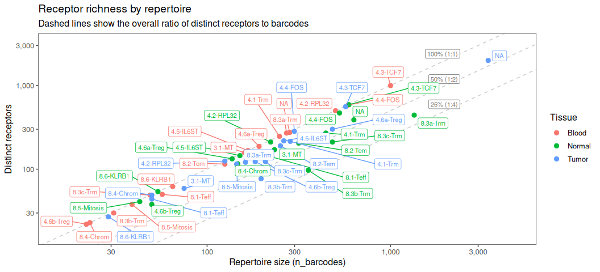
Note: You may see NAs, or an unexpectedly high number of receptors per barcode (especially in tumor samples), if you analyze only the "TRB" chain. This happens because a single barcode can have multiple TRB contigs, due to technical or biological reasons (e.g., malignant cells). Switching to a paired-chain (TRA + TRB) schema forces
immundatato collapse these into a single receptor pair per barcode, producing a clearer one-cell-one-receptor relationship and making cluster-level summaries more interpretable.
Homework for you: try running this analysis with a paired-chain schema
(see earlier examples). The rest of your code will remain unchanged ---
that's the power of decoupling data structure (immundata data
structure) from analysis logic (immunarch functions)!
We can also normalize by the total number of barcodes per tissue for fairer cross-tissue comparison:
idata_stats2 <- idata_stats |> mutate(.by = Tissue, TissueSize = sum(n_barcodes)) |> mutate(n_barcodes_div = n_barcodes / TissueSize)
idata_stats2
# A tibble: 51 × 9
imd_repertoire_id n_barcodes n_receptors locus n_chains Tissue Cluster
<int> <int> <int> <chr> <int> <chr> <chr>
1 1 160 157 TRB 160 Blood 3.1-MT
2 2 248 247 TRB 248 Blood 4.1-Trm
3 3 501 499 TRB 501 Blood 4.2-RPL32
4 4 1000 995 TRB 1000 Blood 4.3-TCF7
5 5 588 584 TRB 588 Blood 4.4-FOS
6 6 167 167 TRB 167 Blood 4.5-IL6ST
7 7 192 187 TRB 192 Blood 4.6a-Treg
8 8 22 22 TRB 22 Blood 4.6b-Treg
9 9 57 50 TRB 57 Blood 8.1-Teff
10 10 125 115 TRB 125 Blood 8.2-Tem
# ℹ 41 more rows
# ℹ 2 more variables: TissueSize <int>, n_barcodes_div <dbl>
ggplot(data = idata_stats2) +
geom_col(aes(x = Cluster, y = n_barcodes_div, fill = Tissue)) +
ggtitle("No. barcodes per sample")
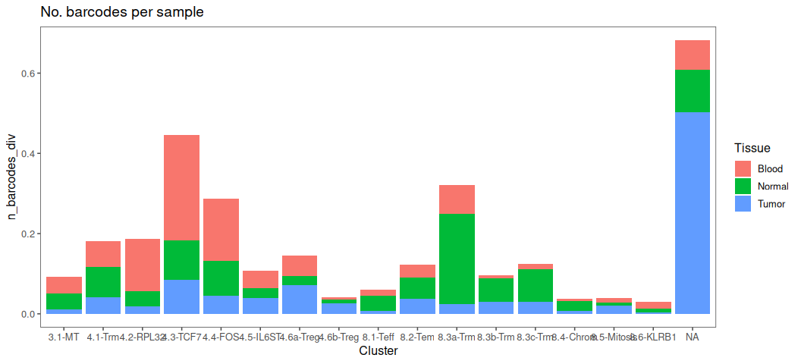
-
Possible interpretation:
-
You may observe patterns like more Tregs in tumor, more Trm in NAT, etc.
-
Remember: normalization lets you compare proportions across samples, but absolute numbers (e.g., total cells per tissue) are influenced by capture and sequencing depth.
2a. Global gene usage
One of the most informative immune repertoire features is V(D)J gene segment usage. Shifts in gene usage can reveal biological signatures (e.g., enrichment of certain V genes in tumor-infiltrating clones), technical artifacts, or repertoire biases. Let's create a heatmap showing the frequency of each V gene segment across all cluster-tissue combinations. This gives a compact, bird's-eye view of usage patterns and potential "hotspots" of expansion.
gene_usage_full <- airr_desc_genes(
idata,
gene_col = "v_call",
level = "receptor"
)
gene_usage_full |> vis(col = c("Cluster", "Tissue"))
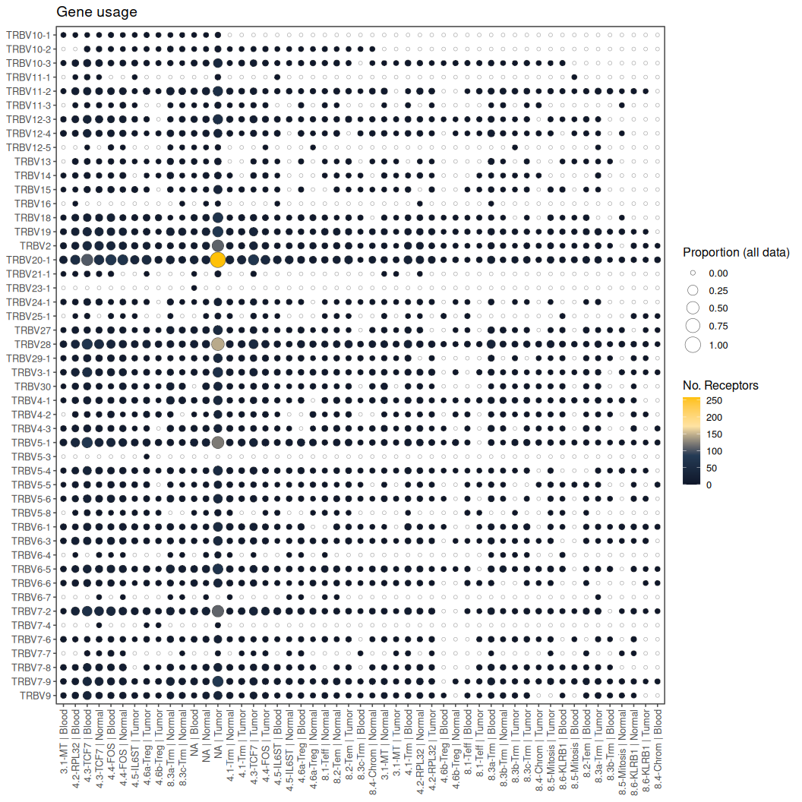
2b. Most overrepresented V gene segments
The full overview can be difficult to interpret. Let's focus on the strongest signals: which V genes are most common across samples and repertoires? This can help reveal outlier samples or overall biases.
# Compute V gene usage for all repertoires (by receptor count, split by tissue if present)
gene_usage_full <- airr_desc_genes(
idata,
gene_col = "v_call",
level = "receptor"
)
top_n <- 10
top_vgenes <- gene_usage_full |>
group_by(Tissue, v_call) |>
summarize(n = sum(n), .groups = "drop") |>
group_by(Tissue) |>
slice_max(order_by = n, n = top_n) |>
ungroup()
# Collect the *union* of all top genes across tissues
top_gene_set <- unique(top_vgenes$v_call)
# Filter to only these V genes for the heatmap (across all clusters and tissues)
usage_focus <- gene_usage_full |>
filter(v_call %in% top_gene_set)
usage_focus |> vis(col = c("Cluster", "Tissue"))
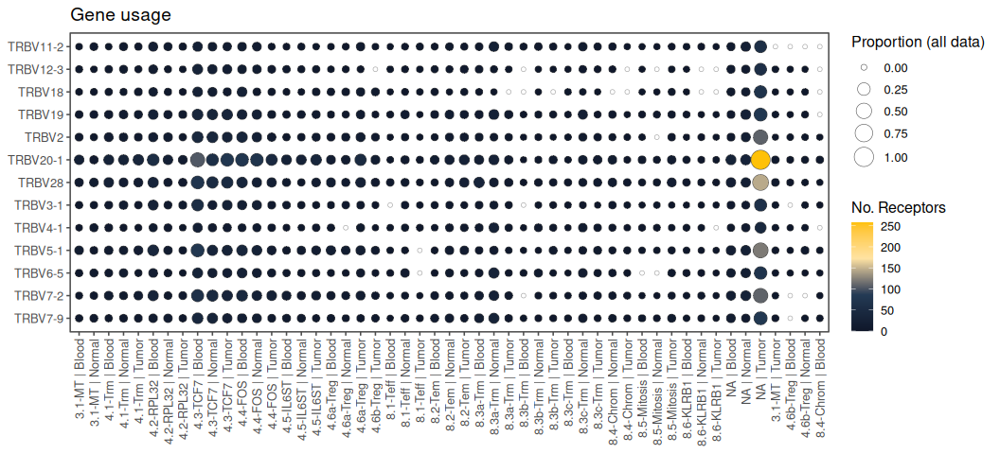
2c. Cluster-specific V gene distribution
We can use the same approach to focus on specific clusters of interest:
# We use special functions from duckdb to filter clusters of interest
gene_usage_full <- idata |>
filter_immundata(dd$regexp_matches(Cluster, "Treg|Trm")) |>
airr_desc_genes(
gene_col = "v_call",
level = "receptor"
)
top_n <- 10
top_vgenes <- gene_usage_full |>
group_by(Tissue, v_call) |>
summarize(n = sum(n), .groups = "drop") |>
group_by(Tissue) |>
slice_max(order_by = n, n = top_n) |>
ungroup()
# Collect the *union* of all top genes across tissues
top_gene_set <- unique(top_vgenes$v_call)
# Filter to only these V genes for the heatmap (across all clusters and tissues)
usage_focus <- gene_usage_full |>
filter(v_call %in% top_gene_set)
usage_focus |> vis(col = c("Cluster", "Tissue"))
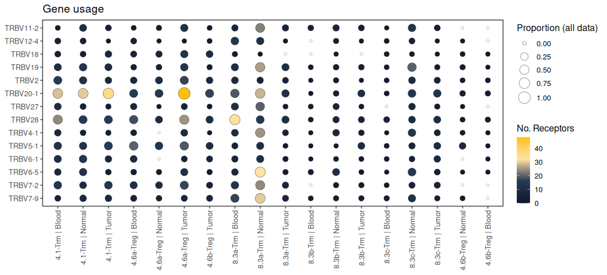
-
The rows are the most frequent V genes (union of top N per tissue).
-
The columns represent every observed (Cluster, Tissue) combination.
-
Color shows how often each V gene appears in each group.
3a. CDR3 length distribution for the full dataset
The CDR3 length distribution is a key QC and biological fingerprint of an immune repertoire. It can reveal technical artifacts (e.g., primer/UMI bias), repertoire selection, or expansion of unusual clones in disease states.
We can compute and visualize CDR3 length distributions across all tissues and clusters.
# Compute CDR3 length stats for all repertoires (default is cdr3_aa)
length_stats <- airr_desc_lengths(
idata,
seq_col = "cdr3"
)
length_stats |> vis(fill = "Tissue", facet = "Tissue")
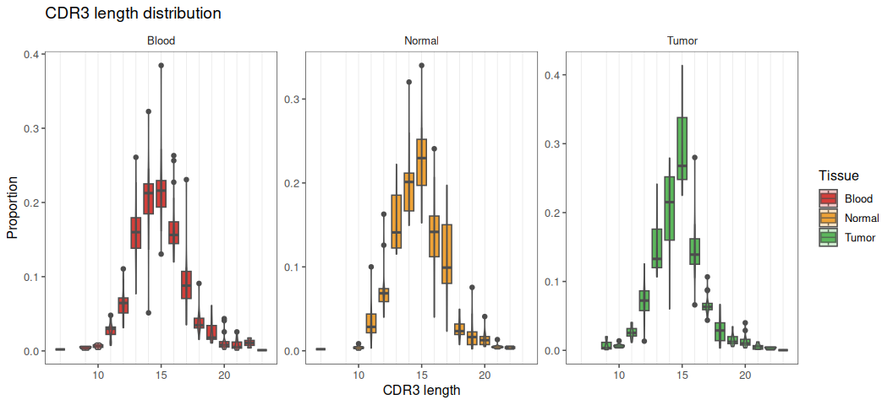
3b. CDR3 length distribution for the selected clusters
You can also zoom in on clusters of interest (e.g., Trm, Treg) for fine-grained analysis.
# Choose clusters to display
selected_clusters <- c("Trm", "Treg")
length_stats_sel <- length_stats %>%
filter(grepl("Trm|Treg", Cluster))
ggplot(length_stats_sel, aes(x = seq_len, y = pct, color = Tissue)) +
geom_line(stat = "identity", linewidth = 1.2) +
facet_wrap(~ Cluster, scales = "free_y") +
ggtitle("CDR3 length distribution in Trm and Treg clusters") +
xlab("CDR3 length (amino acids)") +
ylab("% receptors") +
ggsci::scale_color_locuszoom()
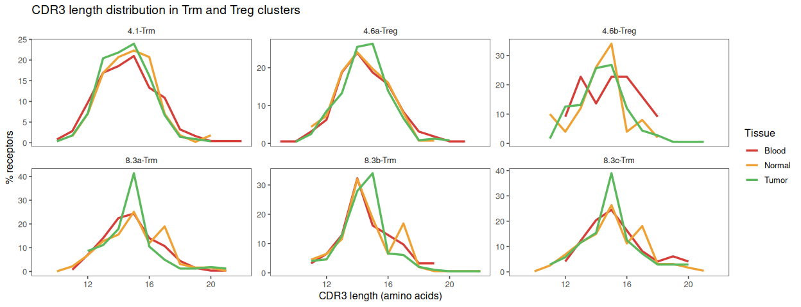
-
Possible interpretation:
-
Most TCR/BCR repertoires peak at 13--15 amino acids for CDR3, but expansions, artifacts, or certain subsets may show longer or shorter tails.
- Comparing distributions across tissues/clusters can highlight biologically relevant skewing (e.g., enrichment of unusually long or short CDR3s in tumors).
Clonality: quantifying immune expansion
Immune repertoires are rarely flat. Certain T or B cell receptors expand dramatically in response to infection, cancer, or autoimmunity. Quantifying clonality lets you:
- Detect immune responses ("public" expansions or tumor-infiltrating clones)
- Compare the expansion across samples, tissues, or cell states
- Identify technical problems (e.g., overamplification)
Currently there are three ways to summarize clonality:
airr_clonality_lineRank--abundance plots Shows how steep the line of receptor abundances is.airr_clonality_propClonal space partitions by proportion Shows how much space is occupied by hyperexpanded, large, or rare clones.airr_clonality_rankClonal space partitions by rank Shows how much space is occupied by receptors from different bins: the 10 most abundant receptors, the 100 most abundant receptors, etc.
Note: These functions calculate repertoire-level statistics. To label individual receptors by clonality, e.g., to highlight hyperexpanded receptors on a UMAP, use the
annotate_clonality_*()functions. We'll return to these in the sections below.
1. Rank abundance
A rank abundance plot shows, for each sample (or group), how cell counts drop as you go from the most to least abundant clone. In other words, how steep the clonal hierarchy is.
- Steep curves: few highly expanded clones dominate (e.g., tumor or antigen-driven response)
- Flat curves: repertoire is diverse and even
# Compute the abundance (cell/UMI count) for top 1000 clones per repertoire
clonal_line <- airr_clonality_line(
idata,
limit = 1000
)
clonal_line
# A tibble: 11,116 × 6
imd_repertoire_id imd_count imd_proportion index Tissue Cluster
* <int> <dbl> <dbl> <int> <chr> <chr>
1 51 105 0.0308 1 Tumor <NA>
2 28 87 0.0647 1 Normal 8.3a-Trm
3 29 61 0.171 1 Normal 8.3b-Trm
4 34 51 0.0808 1 Normal <NA>
5 19 47 0.106 1 Normal 4.1-Trm
6 47 37 0.178 1 Tumor 8.3c-Trm
7 46 36 0.183 1 Tumor 8.3b-Trm
8 30 32 0.0664 1 Normal 8.3c-Trm
9 18 22 0.0944 1 Normal 3.1-MT
10 27 16 0.0506 1 Normal 8.2-Tem
# ℹ 11,106 more rows
clonal_line |> vis(color = "Tissue")
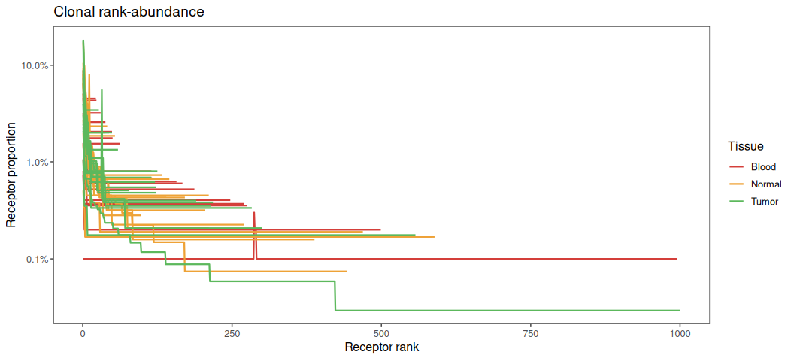
- Possible interpretation:
- If you see a sharp drop ("hockey stick" curve), a handful of clones dominate. This is often a hallmark of strong antigen-driven selection.
- Flatter curves are typically seen in healthy tissues or naive compartments, reflecting higher diversity.
2. Clonal space partitioning
Sometimes, you want to summarize clonal expansion in a single barplot splitting each repertoire into bins by abundance. For example:
- "Hyperexpanded": clones with ≥1% of all cells
- "Large": ≥0.1%, etc.
- "Rare": all the way down to singletons
This lets you compare how much of each tissue or cluster is occupied by hyperexpanded, large, small and rare clones.
clonal_prop <- airr_clonality_prop(idata)
clonal_prop
# A tibble: 82 × 5
imd_repertoire_id clonal_prop_bin occupied_prop Tissue Cluster
* <int> <chr> <dbl> <chr> <chr>
1 12 Hyperexpanded 1.000 Blood 8.3b-Trm
2 45 Hyperexpanded 0.340 Tumor 8.3a-Trm
3 51 Hyperexpanded 0.0452 Tumor <NA>
4 47 Hyperexpanded 0.423 Tumor 8.3c-Trm
5 39 Hyperexpanded 0.0301 Tumor 4.4-FOS
6 9 Hyperexpanded 1.00 Blood 8.1-Teff
7 10 Hyperexpanded 0.136 Blood 8.2-Tem
8 22 Hyperexpanded 0.0493 Normal 4.4-FOS
9 19 Hyperexpanded 0.309 Normal 4.1-Trm
10 27 Hyperexpanded 0.244 Normal 8.2-Tem
# ℹ 72 more rows
clonal_prop |> vis()
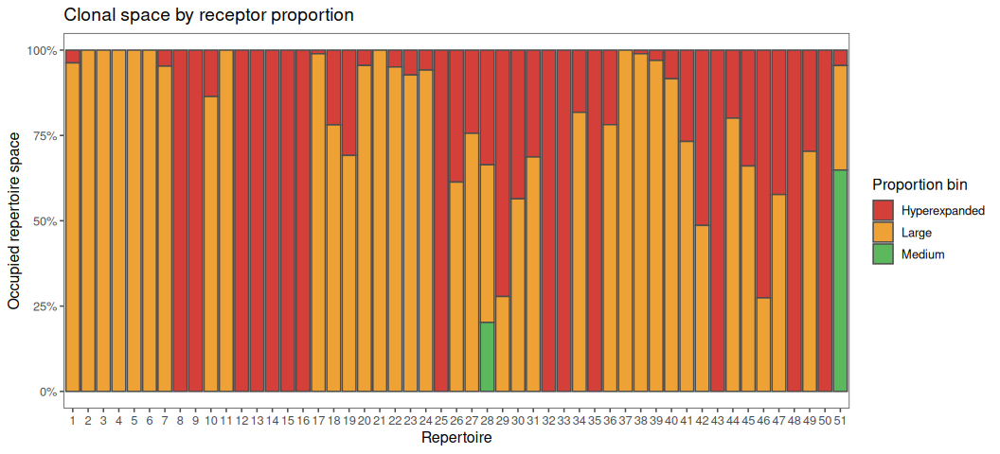
clonal_prop_per_tissue <- airr_clonality_prop(idata |> agg_repertoires("Tissue"))
clonal_prop_per_tissue |> vis(xval = "Tissue")
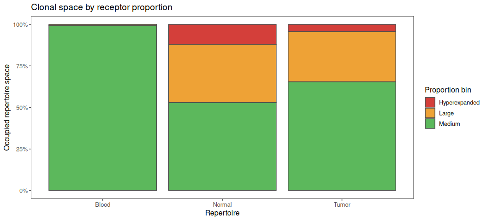
- Possible interpretation:
- A tumor-infiltrated sample often shows a big block of "hyperexpanded" (or "large") clones, reflecting a focused immune response or selection.
- Healthy tissues or controls should have more "rare" or "small" clones---indicating diverse, unperturbed immunity.
You can repeat this for cell clusters, different patients, or experimental groups simply by re-aggregating repertoires (see earlier sections).
3. Clonal rank bins
Useful for fine-grained analysis: how much of the repertoire is explained by the top 10, top 100, or top 1000 clones?
clonal_rank <- airr_clonality_rank(
idata,
bins = c(10, 100, 1000)
)
clonal_rank
# A duckplyr data frame: 5 variables
imd_repertoire_id clonal_rank_bin occupied_prop Tissue Cluster
<int> <int> <dbl> <chr> <chr>
1 23 10 0.106 Normal 4.5-IL6ST
2 23 1000 0.298 Normal 4.5-IL6ST
3 40 10 0.115 Tumor 4.5-IL6ST
4 40 1000 0.450 Tumor 4.5-IL6ST
5 45 100 0.580 Tumor 8.3a-Trm
6 51 100 0.209 Tumor <NA>
7 12 100 0.645 Blood 8.3b-Trm
8 14 10 0.435 Blood 8.4-Chrom
9 1 10 0.0813 Blood 3.1-MT
10 1 1000 0.356 Blood 3.1-MT
# ℹ more rows
clonal_rank |> vis()
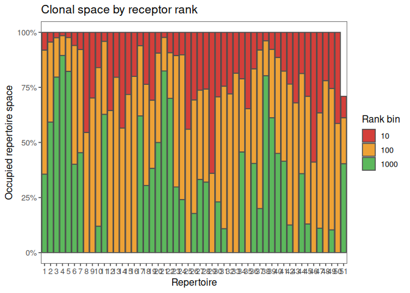
clonal_rank_per_tissue <- airr_clonality_rank(
idata |> agg_repertoires("Tissue"),
bins = c(10, 100, 1000)
)
clonal_rank_per_tissue |> vis(xval = "Tissue")
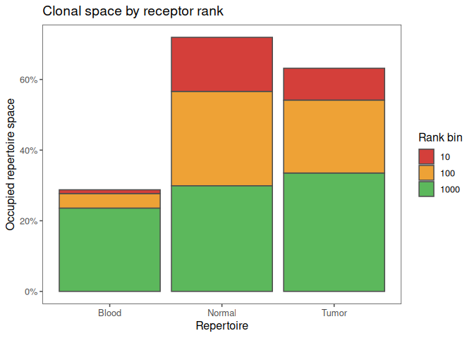
Tip: You can also plot this as a heatmap, line plot, or grouped barplot as needed.
-
Best practices & notes:
-
Always compare clonality to other diversity measures (Shannon, Simpson, etc.) for a complete picture.
- Technical artifacts (PCR/UMI bias) can sometimes mimic true expansion---use biological controls and inspect barcodes/cell counts per clone if unsure.
- When using clusters or annotations, make sure you have enough cells per group for the statistics to be meaningful.
Diversity: how rich and even are your repertoires?
True immune diversity is about more than just the number of unique sequences. It's about the balance of clone sizes and the richness of the repertoire - whether a handful of clones dominate or if the population is broad and even. Measuring diversity helps you:
- Compare immune health or perturbation across tissues, patients, or clusters
- Spot narrowing (loss of diversity) in disease, aging, or after therapy
- Select features for machine learning and biomarker discovery
Diversity is the flip side of clonality:
- Clonality highlights enrichment --- how much your repertoire is dominated by overexpanded ("clonal") receptors.
- Diversity measures the overall heterogeneity and evenness of the repertoire --- are many clones present, and are they well balanced, or is the repertoire narrow?
In practical terms:
- High diversity = many unique clones with relatively similar abundances. Typical of healthy, naive, or unperturbed immunity.
- Low diversity = few clones dominate (high clonality). Often seen in strong immune responses, cancer, infection, or technical issues.
immunarch provides multiple diversity estimators, each with its own
interpretation. To see all options or details, run ?airr_diversity in
your R console. Supported methods are:
-
airr_diversity_dxx()Coverage diversity --- D50, D20, D80... "How many top clones do you need to cover X% of all cells?" Small D50 = a few clones dominate (low diversity); large D50 = highly polyclonal. -
airr_diversity_chao1()A nonparametric asymptotic estimator of species richness (number of species in a population). One of the most used methods for estimating immune repertoire diversity. -
airr_diversity_shannon()Shannon entropy --- a gold standard, evenness-aware metric for diversity. Higher values = more diverse and even repertoire. -
airr_diversity_pielou()Pielou's evenness --- entropy normalized by clone count, ranges [0, 1]. Use when comparing repertoires of very different sizes. -
airr_diversity_index()Hill number (q=1) --- the "effective number" of clones, combines richness and evenness. Intuitive and robust: "How many equally frequent clones would give this entropy?" -
airr_diversity_hill()Hill diversity profile (q=0,1,2, ...) Powerful for exploring sensitivity to rare vs. abundant clones.- q=0: just unique count ("richness")
- q=1: entropy-based (exp(Shannon))
- q=2: Simpson's index (abundant clones dominate)
# 1. Coverage diversity — D50: how many clones cover 50% of the repertoire?
d50 <- airr_diversity_dxx(idata, perc = 50)
p1 <- d50 |> vis()
# 3. Chao1 — non-parametric estimator of species richness (number of unique receptors)
chao <- airr_diversity_chao1(idata)
p2 <- chao |> vis(fill = "Tissue")
# 3. Shannon entropy — classical diversity (higher = more even)
shannon <- airr_diversity_shannon(idata)
p3 <- shannon |> vis(xval = "Cluster")
# 4. Pielou's evenness (normalized entropy, 0 = dominated, 1 = perfectly even)
pielou <- airr_diversity_pielou(idata)
p4 <- pielou |> vis(xval = "Tissue")
p5 <- pielou |> vis(facet = "Tissue", fill = "Cluster", dir = "v")
# 5. Hill number (q=1): the “effective number of clones”
hill1 <- airr_diversity_index(idata)
# 6. Hill diversity profile (q=0, 1, 2, ...)
hill_profile <- airr_diversity_hill(idata, q = c(0, 1, 2))
p1
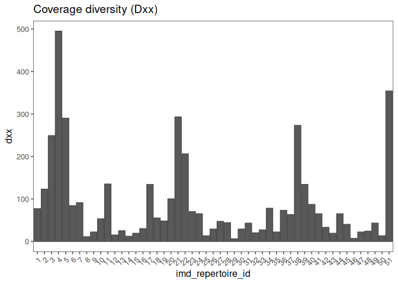
p2
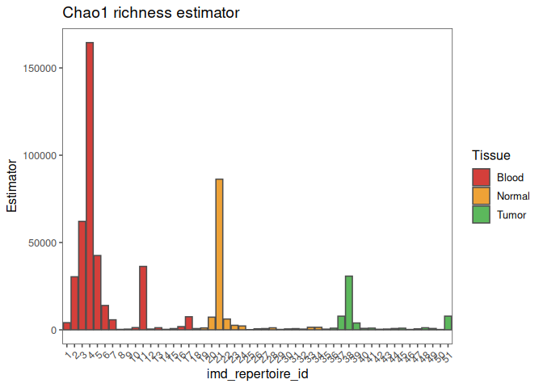
p3
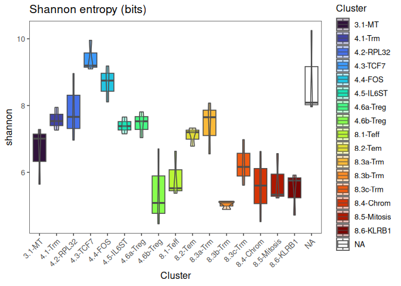
p4
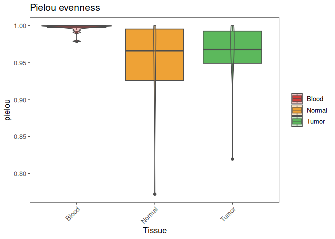
p5
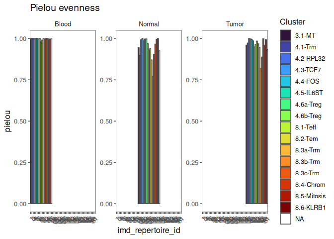
Rarefaction analysis
The three tissues were sampled at different depths. Before interpreting their diversity, we will inspect richness as a function of the number of retained T cells and repeat a comparison at a common cell count. In other words, we will explore how sampling depth affects diversity.
We create a tissue-level object for the following examples. The original
idata still contains the tissue-by-cluster repertoires defined
earlier. Here, counts and proportions refer to all retained TRB-bearing
cells in each tissue, and receptor identity remains CDR3 amino-acid
sequence plus V gene.
idata_tissue <- agg_repertoires(idata, "Tissue")
idata_tissue$repertoires
## # A tibble: 3 × 4
## imd_repertoire_id Tissue n_barcodes n_receptors
## <int> <chr> <dbl> <int>
## 1 1 Blood 3820 3721
## 2 2 Normal 5956 2672
## 3 3 Tumor 6775 3495
airr_diversity_rarefaction() estimates how many distinct receptors
would be observed at each sampling depth. We use absolute cell counts
and richness (norm = FALSE) and disable extrapolation, so every curve
stays within that tissue's observed sampling depth. The ribbons
summarize uncertainty under the estimator's bootstrap model.
set.seed(42)
tissue_rarefaction <- airr_diversity_rarefaction(
idata_tissue,
norm = FALSE,
extrapolation = 0,
nboot = 50,
verbose = FALSE
)
vis(tissue_rarefaction, color = "Tissue") +
labs(x = "Retained cells sampled", y = "Expected distinct receptors")
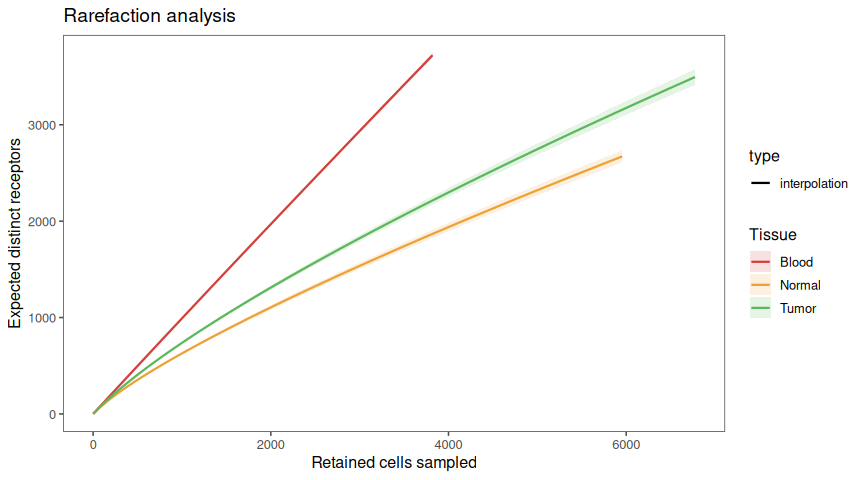
Compare curves at the same cell count, rather than comparing only their final points. A rising curve indicates that more sampling is expected to reveal more receptors.
Repeat the comparison at a common cell count
downsample_immundata() samples whole cells without replacement and
returns a new ImmunData.
common_depth <- min(idata_tissue$repertoires$n_barcodes)
idata_equal_depth <- downsample_immundata(
idata_tissue, n = common_depth, seed = 42
)
idata_equal_depth$repertoires
## # A tibble: 3 × 4
## imd_repertoire_id Tissue n_barcodes n_receptors
## <int> <chr> <dbl> <int>
## 1 1 Blood 3820 3721
## 2 2 Normal 3820 1863
## 3 3 Tumor 3820 2246
shannon_depth <- bind_rows(
airr_diversity_shannon(idata_tissue) |> mutate(Depth = "Observed"),
airr_diversity_shannon(idata_equal_depth) |> mutate(Depth = "Equal cell count")
)
ggplot(shannon_depth, aes(x = Tissue, y = shannon, fill = Depth)) +
geom_col(position = "dodge") +
labs(x = "Tissue", y = "Shannon entropy (bits)", fill = "Sampling depth")
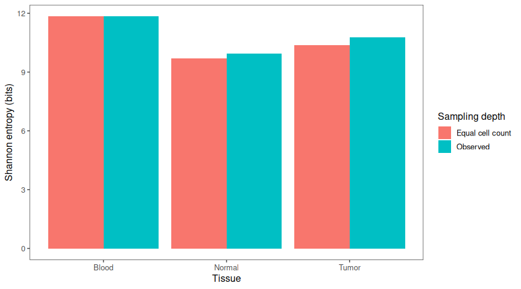
This is one reproducible sensitivity check. For a substantive
comparison, repeat downsampling with several seeds and examine whether
the conclusion persists. Equal cell counts do not correct differences in
cell capture or replace independent biological replicates. We will
continue the receptor-selection examples with idata_tissue in the
section after the next one.
We can now calculate statistics for individual repertoires. But how similar are the repertoires to one another? In the next section, we'll compare them using their receptor features.
Quantify repertoire similarity
In immunology, public receptors are TCRs or BCRs that appear in multiple individuals or samples, suggesting convergent responses to shared antigens, or technical "publicity" due to biases. Measuring the overlap between repertoires helps you:
- Check for a signal of shared, or "public," immune receptors.
- QC for sample swap, cross-contamination, or replicate similarity
- Compare cohort similarity or donor-sharing at scale
immunarch provides the following functions for quantifying this:
-
repsim_intersection()Intersection: how many receptor identities were observed in both tissues? Use for overlap heatmaps, or to check how much two samples have in common. -
repsim_jaccard()Jaccard similarity: what fraction of the combined set of observed identities is shared? (|A∩B| / |A∪B|). This normalizes for differences in sample size---great for comparing across experiments or donors. -
repsim_chao_jaccard()Chao-Jaccard similarity: how similar are the repertoires after estimating the contribution of shared receptors missed through limited sampling? Accounts for the sampling randomness. -
repsim_morisita_horn()Morisita-Horn similarity: do the same receptors account for much of the cell abundance in both tissues? Dominant public immune receptors have more influence on this score. -
repsim_bray()Bray-Curtis similarity: how much of the receptor abundance composition is shared between tissues? Resembles the Morisita-Horn index, more sensitive to the sampling size differences, but gives less weight to extremes and more weight to the rare immune receptors. Good middle ground.
For full options and details, run ?repsim in your R console.
repsim_intersection(idata_tissue) |> vis()
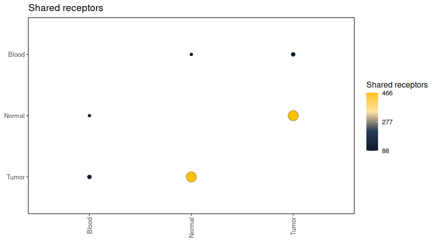
repsim_jaccard(idata_tissue) |> vis()
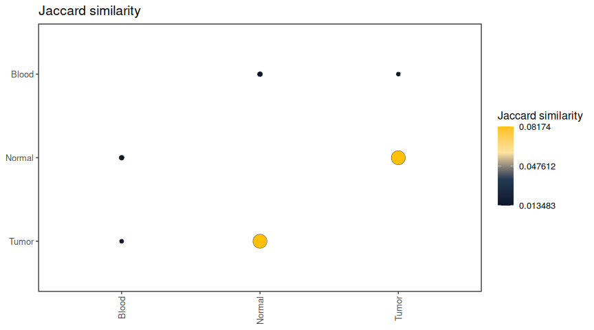
repsim_chao_jaccard(idata_tissue) |> vis()
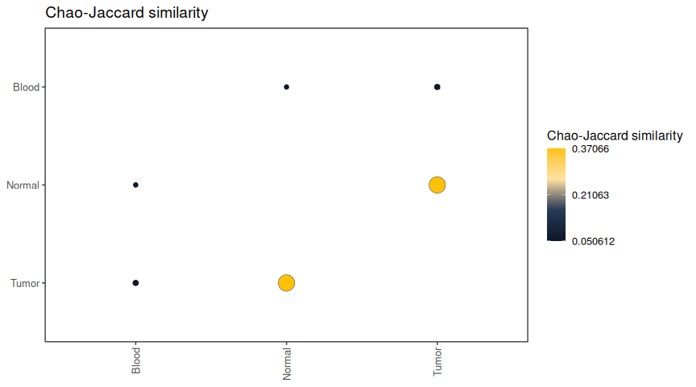
repsim_morisita_horn(idata_tissue) |> vis()
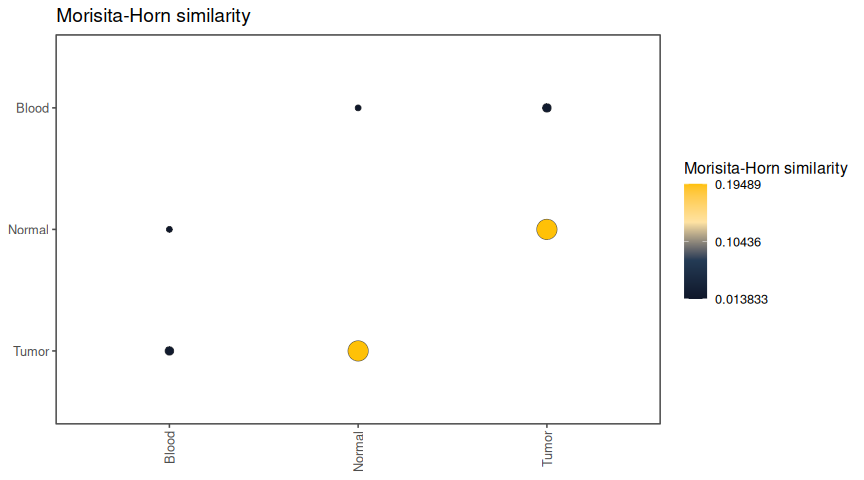
repsim_bray(idata_tissue) |> vis()
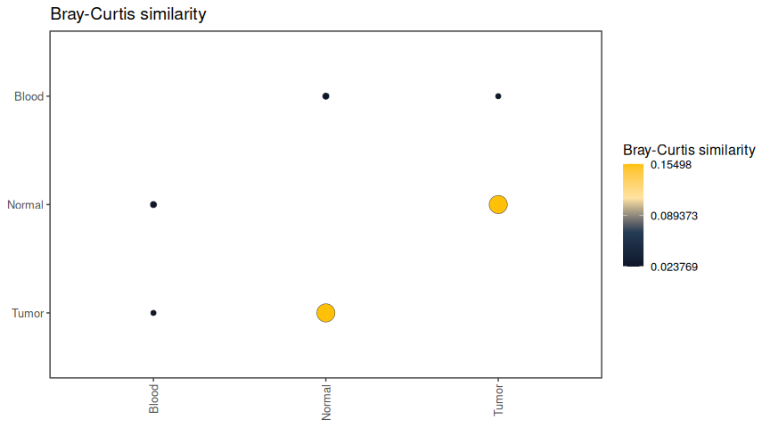
To examine whether the comparison depends on the largest expansions,
repeat Bray-Curtis with transform = "log1p". This exploratory
transformation changes the abundance scale, so interpret the score as
similarity on that transformed scale rather than a fraction of original
cell abundance.
repsim_bray(idata_tissue, transform = "log1p") |> vis()
We can also inspect the original proportions of individual receptors shared by blood and tumour. Each point in this plot is a shared receptor identity.
vis(idata_tissue, x = "Blood", y = "Tumor", lm = FALSE)
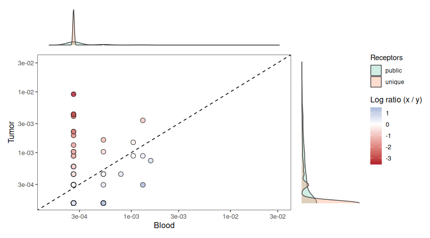
We found receptors shared between repertoires. Which receptors are they, and how can we investigate them? In the next section, we'll extract, analyse and visualise them.
Discover and annotate immune receptors
This section was written quickly to cover a frequently requested feature. A more polished version will be available in a future release.
Track expanded tumour receptors across tissues
Which receptors dominate the tumour, and are they also detected in blood or normal adjacent tissue? We select receptors that each account for at least 1% of the retained tumour cells, then follow those identities in all three tissues.
tumour_id <- idata_tissue$repertoires |>
filter(Tissue == "Tumor") |>
pull(imd_repertoire_id)
tumour_source <- filter(
idata_tissue,
Tissue == "Tumor",
imd_proportion >= 0.01
)
tracked_tumour <- vdj_track(
idata_tissue,
from = tumour_source,
output = "df"
)
tracked_tumour$Tissue <- factor(
tracked_tumour$Tissue, levels = c("Blood", "Normal", "Tumor")
)
vis(tracked_tumour, xval = "Tissue", plot = "line")
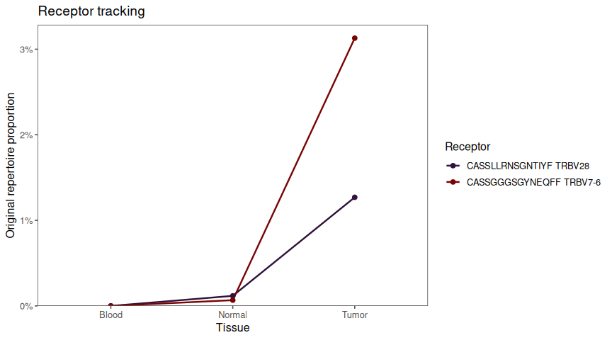
vis(tracked_tumour, xval = "Tissue", plot = "line", yval = "imd_orig_count")
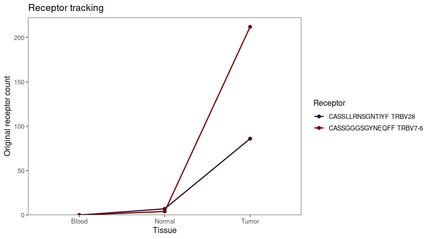
The summary has one row per selected receptor and tissue, including
zeros where the receptor was unobserved. Columns imd_orig_count and
imd_orig_proportion preserve the abundances in the original tissue
repertoires. In particular, the plotted proportions are not renormalized
to sum to one over the selected receptors.
For a stacked view, use plot = "area":
vis(tracked_tumour, xval = "Tissue", plot = "area")
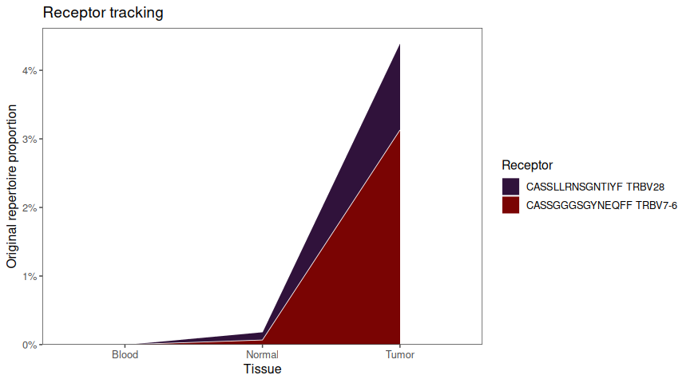
An alluvial view is available with the optional ggalluvial package.
Install it once with install.packages("ggalluvial"), then plot:
vis(tracked_tumour, xval = "Tissue", plot = "alluvial")
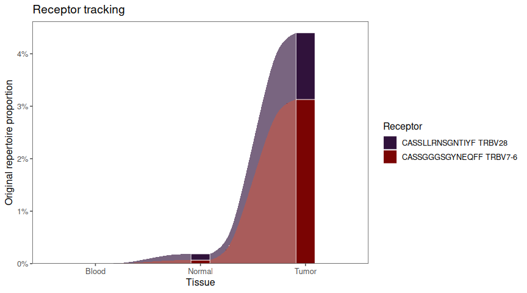
Find the tumour clusters carrying these receptors
Which tumour cell clusters contain the most cells carrying our two
expanded receptors? idata already has tissue-by-cluster repertoires,
so we only need to filter for tumour cells and pass the same
tumour_source to vdj_track().
tumour_clusters <- filter(idata, Tissue == "Tumor", !is.na(Cluster))
tracked_clusters <- vdj_track(tumour_clusters,
from = tumour_source, output = "df")
vis(tracked_clusters, xval = "Cluster", plot = "line",
yval = "imd_orig_count", title = "Tumour-expanded receptors by cell cluster") +
theme(axis.text.x = element_text(angle = 45, hjust = 1))
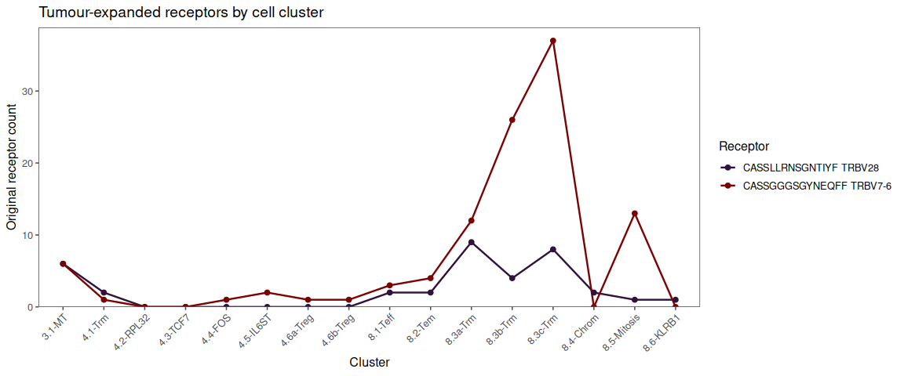
To inspect the peaks, list the three clusters containing the most cells for each receptor. The percentage is relative to all retained TRB-bearing cells in that cluster, so it also helps compare clusters of different sizes.
cluster_peaks <- tracked_clusters |>
filter(imd_orig_count > 0) |>
slice_max(imd_orig_count, n = 3, by = c(cdr3, v_call), with_ties = FALSE) |>
mutate(cluster_percent = 100 * imd_orig_proportion) |>
select(Cluster, cdr3, v_call, imd_orig_count, cluster_percent)
knitr::kable(cluster_peaks, digits = 1,
col.names = c("Cluster", "CDR3 amino acids", "V gene", "Cells", "Cluster cells (%)"))
| Cluster | CDR3 amino acids | V gene | Cells | Cluster cells (%) |
|---|---|---|---|---|
| 8.3a-Trm | CASSLLRNSGNTIYF | TRBV28 | 9 | 5.6 |
| 8.3c-Trm | CASSLLRNSGNTIYF | TRBV28 | 8 | 3.8 |
| 3.1-MT | CASSLLRNSGNTIYF | TRBV28 | 6 | 8.0 |
| 8.3c-Trm | CASSGGGSGYNEQFF | TRBV7-6 | 37 | 17.8 |
| 8.3b-Trm | CASSGGGSGYNEQFF | TRBV7-6 | 26 | 13.2 |
| 8.5-Mitosis | CASSGGGSGYNEQFF | TRBV7-6 | 13 | 9.0 |
In this dataset, CASSGGGSGYNEQFF with TRBV7-6 has its largest
labelled-cell count in 8.3c-Trm, while CASSLLRNSGNTIYF with TRBV28
peaks in 8.3a-Trm. The cluster with the most cells need not have the
highest within-cluster percentage.
Find the selected receptors on the single-cell UMAP
Build a compact panel of the selected CDR3--V combinations and annotate the full tissue object.
tumour_panel <- tracked_tumour |>
distinct(cdr3, v_call) |>
duckplyr::as_duckdb_tibble() |>
mutate(tumour_receptor_group = "Expanded tumour receptor")
idata_tumour_marked <- annotate_with_database(
idata_tissue,
db = tumour_panel,
by = c(cdr3 = "cdr3", v_call = "v_call"),
label_col = "tumour_receptor_group"
) |>
mutate(tumour_receptor_group = coalesce(
tumour_receptor_group, "Other retained TRB"
))
sdata_tumour <- annotate_seurat(
idata_tumour_marked, sdata, cols = "tumour_receptor_group"
)
sdata_tumour$tumour_receptor_group[
is.na(sdata_tumour$tumour_receptor_group)
] <- "No retained TRB"
DimPlot(sdata_tumour, reduction = "umap",
group.by = "tumour_receptor_group", order = "Expanded tumour receptor",
cols = c("Expanded tumour receptor" = "#1E40AF",
"Other retained TRB" = "#D8B365", "No retained TRB" = "#8C8C8C"))
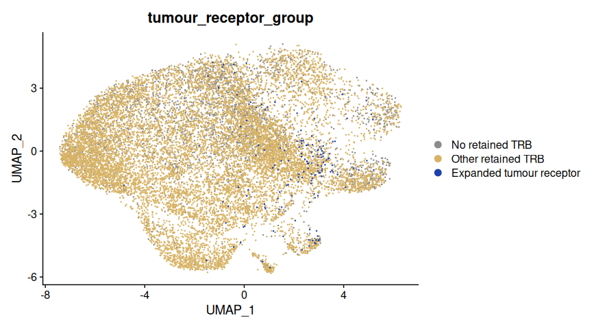
The labels distinguish cells carrying a selected receptor, other cells with a retained TRB, and transcriptomic cells without a retained TRB in this analysis. Blue marks the selected receptors, tan marks other retained TRBs, and grey marks cells without a retained TRB.
Select shared and tissue-restricted receptors
annotate_public() adds sharing statistics while retaining the full
object. With one repertoire per tissue, imd_public_incidence is the
number of tissues in which a receptor was observed. We can transfer this
label to Seurat using the same barcode interface as for clonality
annotations (see below).
idata_tissue_public <- annotate_public(idata_tissue)
## No strata found in idata$repertoires. Computing global publicness metrics only.
## Run `immundata::agg_strata()` to add per-strata metrics.
sdata_public <- annotate_seurat(
idata_tissue_public, sdata, cols = "imd_public_incidence"
)
sdata_public$tissue_sharing <- ifelse(
is.na(sdata_public$imd_public_incidence), "No retained TRB",
paste0("Observed in ", sdata_public$imd_public_incidence, " tissue(s)")
)
DimPlot(sdata_public, reduction = "umap",
group.by = "tissue_sharing", shuffle = TRUE)
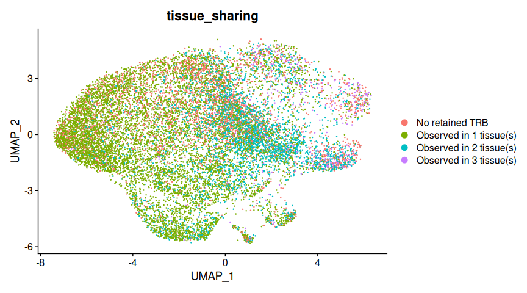
Summarize receptor sharing directly
The receptor-level summary complements the cell-level UMAP. Pass the
annotated object to vis() to count distinct receptor identities by the
number of repertoires in which they were detected. Reusing
idata_tissue_public avoids recomputing the annotations, or you can use
annotate_public(idata_tissue) |> vis(plot = "incidence").
idata_tissue_public |> vis(plot = "incidence")
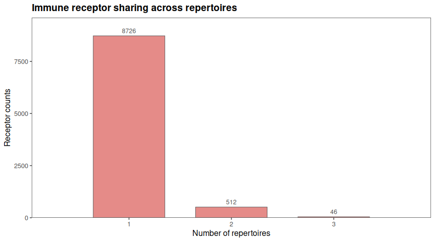
Each receptor contributes once to this histogram, regardless of how many cells carry it. Here there is one repertoire per tissue, so incidence counts tissues.
Show the density of cells carrying shared receptors
We can also draw density contours for cells whose receptor was detected
in at least two tissues. We use Seurat metadata and UMAP coordinates
already held in memory; repertoire calculations remain in ImmunData.
sharing_umap <- FetchData(sdata_public,
vars = c("UMAP_1", "UMAP_2", "imd_public_incidence"), clean = FALSE)
shared_umap <- sharing_umap |>
filter(!is.na(imd_public_incidence), imd_public_incidence >= 2)
ggplot(sharing_umap, aes(x = UMAP_1, y = UMAP_2)) +
geom_point(colour = "grey85", size = 0.2) +
geom_density_2d(data = shared_umap, colour = "#0072B2",
linewidth = 0.6, bins = 6) +
coord_equal() +
labs(title = "Density of cells carrying shared receptors",
subtitle = "Receptors detected in at least two tissues",
x = "UMAP 1", y = "UMAP 2")
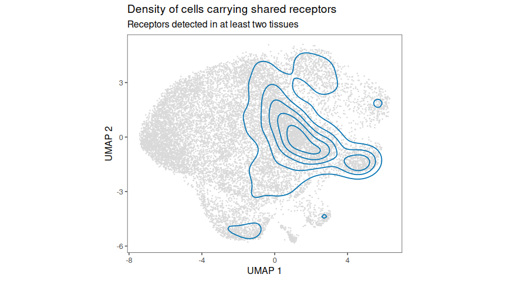
The density contours show where those cells concentrate on the displayed UMAP. They depend on sampling and the embedding, and do not measure gene expression or establish enrichment relative to the surrounding cells. Use the colouring plot to inspect the individual cells and their sharing labels.
vdj_public() selects receptor identities according to explicit rules.
Every rule in one call is evaluated against the original input, and all
rules must pass. Here we require observation in both tumour and blood,
then retain those identities wherever they occur, including normal
tissue.
blood_id <- idata_tissue$repertoires |>
filter(Tissue == "Blood") |>
pull(imd_repertoire_id)
shared_tumour_blood <- vdj_public(
idata_tissue,
make_public_filter(repertoires = tumour_id, min_incidence = 1L),
make_public_filter(repertoires = blood_id, min_incidence = 1L)
)
vis(shared_tumour_blood, plot = "public", reference = idata_tissue,
xval = "Tissue", fill = "Tissue")
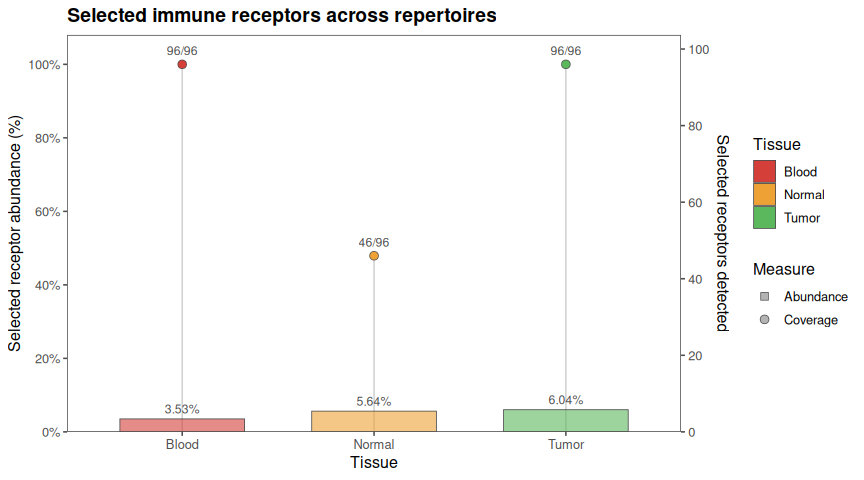
Bars show the fraction of original tissue cell abundance carried by the selected receptors. Dots show how many of the selected receptor identities were detected in each tissue, divided by the size of the selected identity set. These are different denominators: a few expanded receptors can occupy much of a tissue's cell abundance even when only a small fraction of the selected identities is detected there.
To find tumour-restricted candidates, require an observed tumour proportion of at least 0.1% and no observations in blood or normal tissue:
other_tissue_ids <- idata_tissue$repertoires |>
filter(Tissue != "Tumor") |>
pull(imd_repertoire_id)
tumour_restricted <- vdj_public(
idata_tissue,
make_public_filter(repertoires = tumour_id,
min_proportion = 0.001, min_incidence = 1L),
make_public_filter(repertoires = other_tissue_ids, max_incidence = 0L)
)
tumour_restricted
##
## ── ImmunData ───────────────────────────────────────────────────────────────────
##
## ── Receptors: ──
##
## # A duckplyr data frame: 3 variables
## imd_receptor_id cdr3 v_call
## <int> <chr> <chr>
## 1 3873 CASSLTGAEHNEQFF TRBV28
## 2 8617 CSARGGAGETQYF TRBV20-1
## 3 6191 CASSRRRQVLNTEAFF TRBV6-5
## 4 1570 CASGFQGSSYEQYF TRBV28
## 5 3894 CASSSPPGQGITEAFF TRBV7-9
## 6 8586 CASSPDRNSPLHF TRBV7-2
## 7 1583 CASSHMTVNYGYTF TRBV5-4
## 8 8602 CSVLAGDSTGANVLTF TRBV29-1
## 9 8626 CASSLLGSGEQYF TRBV7-9
## 10 8564 CASSLEGGTYNEQFF TRBV28
## # ℹ more rows
## ── Annotations: ──
## # A duckplyr data frame: 26 variables
## barcode locus v_call d_call j_call c_gene productive cdr3 cdr3_nt reads
## <chr> <chr> <chr> <chr> <chr> <chr> <chr> <chr> <chr> <dbl>
## 1 AAACGGGAGGT… TRB TRBV30 None TRBJ2… TRBC2 True CAWS… TGTGCC… 4480
## 2 AAACGGGCAGC… TRB TRBV2… TRBD1 TRBJ2… TRBC2 True CSAR… TGCAGT… 4114
## 3 AAAGATGAGAC… TRB TRBV1… TRBD2 TRBJ2… TRBC2 True CASS… TGTGCC… 13642
## 4 AAAGATGCAGT… TRB TRBV18 None TRBJ2… TRBC2 True CASS… TGTGCC… 3992
## 5 AAAGATGGTAT… TRB TRBV6… TRBD2 TRBJ2… TRBC2 True CASS… TGTGCC… 5539
## 6 AAAGCAAAGAC… TRB TRBV2… TRBD2 TRBJ2… TRBC2 True CSAR… TGCAGT… 9314
## 7 AAAGCAAAGCA… TRB TRBV5… TRBD1 TRBJ1… TRBC1 True CASS… TGTGCC… 924
## 8 AAAGCAATCAA… TRB TRBV4… TRBD2 TRBJ2… TRBC2 True CASS… TGTGCC… 3331
## 9 AACACGTAGAA… TRB TRBV6… TRBD1 TRBJ1… TRBC1 True CASS… TGTGCC… 1258
## 10 AACACGTCAAG… TRB TRBV6… TRBD2 TRBJ2… TRBC2 True CASS… TGTGCC… 2731
## # ℹ more rows
## # ℹ 16 more variables: umis <dbl>, imd_filename <chr>, imd_barcode <chr>,
## # imd_chain_id <int>, imd_receptor_id <int>, imd_n_chains <dbl>, file <chr>,
## # Tissue <chr>, Prefix <chr>, Cluster <chr>, imd_orig_count <dbl>,
## # imd_orig_proportion <dbl>, imd_count <dbl>, imd_repertoire_id <int>,
## # imd_proportion <dbl>, n_repertoires <int>
## ── Receptor schema: ──
## features:
## → cdr3
## → v_call
## chains:
## → TRB
##
## ── Repertoire schema: ──
##
## → Tissue
##
## ── List of repertoires: ──
##
## # A tibble: 1 × 4
## imd_repertoire_id Tissue n_barcodes n_receptors
## <int> <chr> <dbl> <int>
## 1 1 Tumor 929 77
Annotate CMV-associated sequences from VDJdb
This workflow has three steps: prepare a reference panel, annotate our receptors, then track and visualize the matches. We use human TRB records associated with CMV from the pinned VDJdb 2026-06-03 release.
Load the reference panel
Download the archive once through BiocFileCache and extract its slim
table. Subsequent runs reuse the cached download.
vdjdb_zip <- BiocFileCache::bfcrpath(
BiocFileCache::BiocFileCache(ask = FALSE),
"https://github.com/antigenomics/vdjdb-db/releases/download/2026-06-03/vdjdb-2026-06-03.zip"
)
utils::unzip(vdjdb_zip, files = "vdjdb-2026-06-03/vdjdb.slim.txt", exdir = tempdir())
vdjdb <- duckplyr::read_csv_duckdb(
file.path(tempdir(), "vdjdb-2026-06-03/vdjdb.slim.txt"),
options = list(delim = "\t", max_line_size = 10000000)
)
cmv_panel <- vdjdb |>
filter(species == "HomoSapiens", gene == "TRB",
antigen.species == "CMV", vdjdb.score > 0) |>
distinct(cdr3, gene) |>
mutate(cmv_db_match = TRUE) |>
compute()
We keep positive-score records and one row per CDR3--locus combination. This makes the panel a simple yes/no annotation and prevents repeated database records from duplicating our cells.
Annotate and inspect the matches
annotate_with_database() adds the match label to ImmunData. We then
select the labelled receptors and ask vdj_track() for their abundances
in the original tissue repertoires.
idata_cmv <- annotate_with_database(
idata_tissue, db = cmv_panel,
by = c(cdr3 = "cdr3", locus = "gene"), label_col = "cmv_db_match"
)
cmv_receptors <- filter(idata_cmv, cmv_db_match)
cmv_tracking <- vdj_track(idata_tissue, from = cmv_receptors, output = "df")
cmv_matches <- cmv_tracking |>
filter(imd_orig_count > 0) |>
select(Tissue, cdr3, v_call, imd_orig_count)
knitr::kable(cmv_matches,
col.names = c("Tissue", "CDR3 amino acids", "V gene", "Cells"))
| Tissue | CDR3 amino acids | V gene | Cells |
|---|---|---|---|
| Blood | CASSLGQGNSPLHF | TRBV5-6 | 1 |
| Blood | CASSLGTGELFF | TRBV11-2 | 1 |
| Tumor | CASSPGQLQETQYF | TRBV7-8 | 1 |
| Tumor | CASSRLAGGTGELFF | TRBV5-6 | 1 |
| Tumor | CASSAGDEQYF | TRBV18 | 1 |
| Tumor | CASSPGDEQFF | TRBV6-6 | 1 |
The table shows 6 detected receptor--tissue combinations, carried by 6 cells. Matching uses CDR3 and locus, while our receptor identities still include the V gene.
Highlight the matched cells and follow their abundances
Transfer the match label to Seurat and highlight the matching cells. Large red points make these rare matches visible against the grey background.
sdata_cmv <- annotate_seurat(idata_cmv, sdata, cols = "cmv_db_match")
sdata_cmv$cmv_db_match <- sdata_cmv$cmv_db_match %in% TRUE
cmv_cells <- WhichCells(sdata_cmv, expression = cmv_db_match %in% TRUE)
DimPlot(sdata_cmv, reduction = "umap",
cells.highlight = list("CMV-panel match" = cmv_cells),
cols = "grey85", cols.highlight = "#D73027",
pt.size = 0.15, sizes.highlight = 2.5)
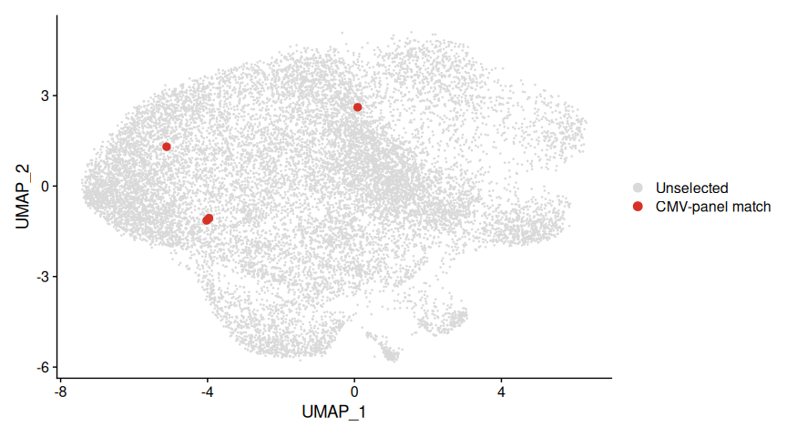
There are 4 matched cells in this Seurat object. Matched VDJ cells absent from the transcriptomic object cannot appear on its UMAP.
Plot the same receptors across tissues with vis(). Counts and
proportions refer to the original tissue repertoires, including zero
where unobserved.
vis(cmv_tracking, xval = "Tissue", plot = "line")
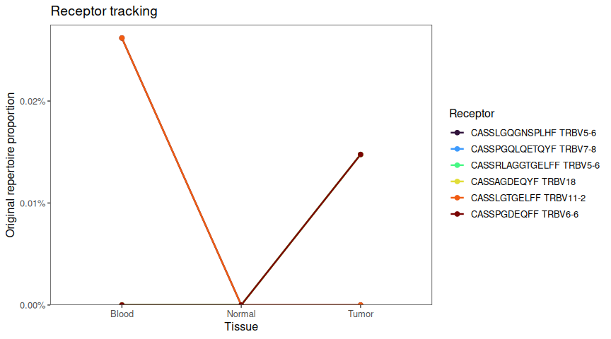
Annotating receptors by clonality
Clonality tells us how overabundant a receptor is inside a repertoire. Here we add a label per receptor, then pass a single label per cell to Seurat for easy plotting on UMAP.
You can choose one of two simple rules:
- By proportion (recommended to start): bins like Hyperexpanded,
Large, ... based on the receptor's
proportionwithin the repertoire. - By rank: bins by the receptor's rank (top 10, top 100, ...) within the repertoire.
Both helpers keep your data intact and add new columns to ImmunData.
Note: Thresholds are heuristics. They are good defaults, but are not universal truths. You have been warned.
idata <- annotate_clonality_prop(idata)
sdata <- annotate_seurat(idata, sdata, cols = "clonal_prop_bin")
Seurat::DimPlot(sdata, reduction = "umap", group.by = "clonal_prop_bin", shuffle = TRUE)
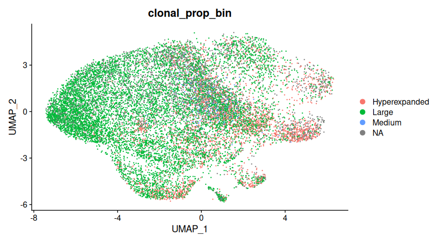
idata <- annotate_clonality_rank(idata)
sdata <- annotate_seurat(idata, sdata, cols = "clonal_rank_bin")
Seurat::DimPlot(sdata, reduction = "umap", group.by = "clonal_rank_bin", shuffle = TRUE)
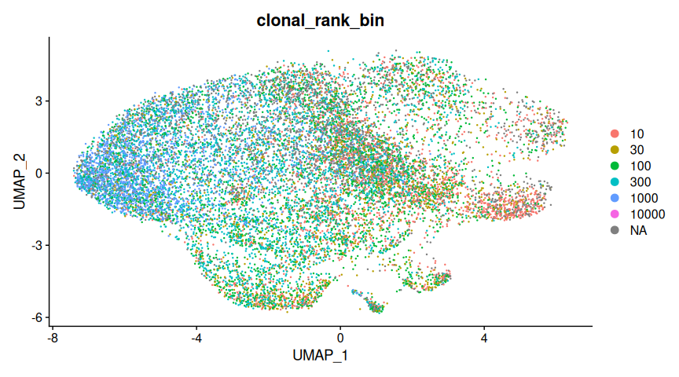
[WIP] Conclusion
No spoilers. :-)
Appendix A: Function naming schema
immunarch follows a specific naming scheme to distinguish between
output types of the different functions and clearly split the functions
to different domains of AIRR data analysis. In other words, just by
looking at the function name, you can infer two things:
-
what to expect as an output from this function
-
to what domain of data analysis it belongs, e.g., diversity, Ig analysis, etc.
A positive consequence of having functions splitted to large domains or
"function families" is to have documentation for one function family in
one place. E.g., you can run ?airr_desc to get help for all
functions in the family of descriptive statistics functions. Same for
?annotate_clonality and others.
Exploratory data analysis functions:
-
airr_*functions work on the repertoire-level (hence "AIRR") and compute per-repertoire descriptive statistics. They return repertoire-level statistics --- a table with per-repertoire computed statistics and joined metadata for the downstream analysis and visualisation convenience. -
annotate_*functions work on the receptor-level and return the inputImmunDatas but with new columns added. BecauseImmunDatais immutable data structure, strictly speaking, you always get a newImmunDatawith additional annotation columns added, but with the same receptor structure and counts, but you can think that this is the very same object you passed to the function as an input. -
repsim_*functions work on the inter-repertoire level and return similarity or distance matrices depending on the method used. E.g., a matrix with pairwise Jaccard similarities. -
vdj_*functions work on the receptor-level. They analyse immune receptors and return a newImmunDatafollowing the function logic. The output is usually a completely new and smallerImmunData, e.g., with public receptors or receptors, found in an immunogenicity database. Optionally, they can return a data frame for faster visualisation and analysis, although you need to make sure your RAM can handle it.
[!NOTE] Q: Why is it different in R and Python? Why can't we have
clonality_annotatein R orannotate_clonalityin Python?A: This is an opinionated decision made to emulate the modules of Python in R. There is no system of modules in R, so to ensure more convenient user experience, I provide functions in this way to minimize the amount of scope names to remember. There are almost 10 diversity metrics alone, and remembering all of this could be quite cumbersome. Instead, a user can always press "tab" to autocomplete function names from
airr_diversity_*. In Python, the reasoning is different. Due to the modular structure of packages, it is easier to split the scope into different domains, e.g.,immunarch.clonalityorimmunarch.public, so the necessary scopes could be imported to the workspace. Hence the Python users look for modules with a specific scope first, and export necessary methods.
Appendix B: Database match details
These optional checks let you inspect the evidence behind the CMV panel and which matched VDJ cells are present in Seurat. They are not required for the annotation and plotting pipeline above.
Inspect the supporting VDJdb records
The table below lists the qualifying database records for the observed CDR3 sequences. V/J calls, HLA and paired alpha chains were not required for matching.
cmv_sequences <- cmv_matches |>
distinct(cdr3) |>
duckplyr::as_duckdb_tibble()
cmv_evidence <- vdjdb |>
filter(species == "HomoSapiens", gene == "TRB",
antigen.species == "CMV", vdjdb.score > 0) |>
semi_join(cmv_sequences, by = "cdr3") |>
select(cdr3, antigen.epitope, antigen.gene, mhc.a, vdjdb.score) |>
distinct() |>
collect()
knitr::kable(cmv_evidence,
col.names = c("CDR3 amino acids", "Epitope", "Antigen gene", "MHC", "Score"))
| CDR3 amino acids | Epitope | Antigen gene | MHC | Score |
|---|---|---|---|---|
| CASSLGTGELFF | NLVPMVATV | pp65 | HLA-A*02:01 | 3 |
| CASSPGQLQETQYF | NLVPMVATV | pp65 | HLA-A*02:01 | 3 |
| CASSRLAGGTGELFF | QIKVRVKMV | IE1 | HLA-B*08:01 | 1 |
| CASSAGDEQYF | CRVLCCYVL | IE-1 | HLA-C*07:02 | 2 |
| CASSLGQGNSPLHF | NLVPMVATV | pp65 | HLA-A*02:01 | 3 |
| CASSPGDEQFF | CRVLCCYVL | IE-1 | HLA-C*07:02 | 2 |
Check transcriptomic coverage
Only the small matched subset is collected here. in_seurat identifies
the matched cells that can be placed on the transcriptomic UMAP.
cmv_cell_details <- cmv_receptors |>
collect() |>
distinct(Tissue, cdr3, v_call, imd_barcode) |>
mutate(in_seurat = imd_barcode %in% colnames(sdata))
knitr::kable(cmv_cell_details)
| Tissue | cdr3 | v_call | imd_barcode | in_seurat |
|---|---|---|---|---|
| Tumor | CASSPGQLQETQYF | TRBV7-8 | LT6_TATCTCAAGTACGTAA-1 | TRUE |
| Blood | CASSLGTGELFF | TRBV11-2 | LB6_CGGACTGTCAGGCGAA-1 | TRUE |
| Blood | CASSLGQGNSPLHF | TRBV5-6 | LB6_TTGGAACTCAGCTCGG-1 | TRUE |
| Tumor | CASSPGDEQFF | TRBV6-6 | LT6_ACATGGTGTCAAAGAT-1 | FALSE |
| Tumor | CASSRLAGGTGELFF | TRBV5-6 | LT6_GCGCAACCACTTCGAA-1 | TRUE |
| Tumor | CASSAGDEQYF | TRBV18 | LT6_CTGGTCTAGGTTACCT-1 | FALSE |
Testing zone
Small test here and there, don't mind me, nothing suspicious is going on here...
c(1,2,3) |> sum()
max([1,2,3])
Text block as a divider...
c(1,2,3) |> sum()
[1] 6
max([1,2,3])
3